<!doctype html>
<html lang="en">
<head>
  <meta charset="utf-8">
  <meta name="viewport" content="width=device-width, initial-scale=1">
  <title>arxiv digest — 2026-07-21</title>
  <style>
:root {
  --bg: #ffffff;
  --fg: #1f2328;
  --muted: #59636e;
  --border: #d0d7de;
  --card: #f6f8fa;
  --link: #0969da;
}
body {
  max-width: 980px;
  margin: 0 auto;
  padding: 2rem 1rem 5rem;
  font-family: -apple-system, BlinkMacSystemFont, "Segoe UI", Helvetica, Arial, sans-serif;
  line-height: 1.55;
  color: var(--fg);
  background: var(--bg);
}
a { color: var(--link); }
img { max-width: 100%; height: auto; }
pre, code { background: var(--card); border-radius: 6px; }
pre { padding: 1rem; overflow-x: auto; }
blockquote { border-left: 4px solid var(--border); padding-left: 1rem; color: var(--muted); }
details { margin: 0.6rem 0; }
summary { cursor: pointer; font-weight: 600; }
.paper-figures-scroll {
  display: flex;
  gap: 1rem;
  overflow-x: auto;
  overscroll-behavior-x: contain;
  padding: 0.75rem 0.25rem 1rem;
  margin: 1rem 0 1.25rem;
  border-top: 1px solid var(--border);
  border-bottom: 1px solid var(--border);
  scroll-snap-type: x proximity;
}
.paper-figure-card {
  flex: 0 0 min(260px, 72vw);
  scroll-snap-align: start;
  background: var(--card);
  border: 1px solid var(--border);
  border-radius: 12px;
  padding: 0.55rem;
}
.paper-figure-card img {
  display: block;
  width: 100%;
  max-height: 240px;
  object-fit: contain;
  background: white;
  border-radius: 8px;
}
.paper-figure-caption {
  display: block;
  margin-top: 0.5rem;
  color: var(--muted);
  font-size: 0.85rem;
}
.figure-strip-hint {
  color: var(--muted);
  font-size: 0.9rem;
  margin-bottom: -0.3rem;
}
</style>
  <!-- MathJax: renders $...$ inline math and $$...$$ display math, plus
       \(...\) and \[...\]. Loaded from the official CDN; works offline
       once cached. Configured to skip code/pre blocks so arxiv IDs that
       look like dollar amounts don't get mangled. -->
  <script>
    window.MathJax = {
      tex: {
        inlineMath: [['$', '$'], ['\\(', '\\)']],
        displayMath: [['$$', '$$'], ['\\[', '\\]']],
        processEscapes: true,
        processEnvironments: true
      },
      options: {
        skipHtmlTags: ['script', 'noscript', 'style', 'textarea', 'pre', 'code'],
        ignoreHtmlClass: 'tex2jax_ignore',
        processHtmlClass: 'tex2jax_process'
      }
    };
  </script>
  <script id="MathJax-script" async
    src="https://cdn.jsdelivr.net/npm/mathjax@3/es5/tex-chtml.js"></script>
</head>
<body>
<header style="background-color: #333; color: white; padding: 15px; margin-bottom: 20px;">
  <h1 style="margin: 0; font-size: 24px;">
    <a href="https://ochelpan.github.io/arXiv_clean/" style="color: white; text-decoration: none;">Main</a>
  </h1>
</header>

<h1>Daily arXiv Report</h1>

<hr>
<p>
<a href="index.html">← Index</a>
 · <a href="papers_01.html">← Previous</a> · <a href="papers_03.html">Next →</a>
</p>
<hr>

<h2>Papers 21–40</h2>
<p><a id="paper-2607.15869"></a></p>
<h3 id="photoelectrical-readout-and-ramsey-interferometry-of-single-shallowly-implanted-nv-centers-in-diamond"><a href="http://arxiv.org/abs/2607.15869v1">Photoelectrical readout and Ramsey interferometry of single shallowly implanted NV centers in diamond</a></h3>
<p><strong>Authors:</strong> Ilia Chuprina, Christoph Findler, Johannes Lang, Petr Siyushev, Fedor Jelezko<br>
<strong>Type:</strong> experiment · <strong>Category:</strong> quantum information and computing · <strong>PDF:</strong> <a href="https://arxiv.org/pdf/2607.15869v1">https://arxiv.org/pdf/2607.15869v1</a><br>
<strong>Analysis basis:</strong> full PDF text, analyzed in chunks
<strong>Topic relevance:</strong> 🔥 <code>QC/QI experiment</code> <strong>4/5</strong> · <code>spintronics-quantum-optics interface</code> <strong>3/5</strong> · <code>quantum measurements</code> <strong>2/5</strong> · <code>interference shaping light</code> <strong>1/5</strong> · <code>quantum optics experiment</code> <strong>1/5</strong></p>
<div class="figure-strip-hint">↔ Scroll figures horizontally</div>
<div class="paper-figures-scroll">
<figure class="paper-figure-card">
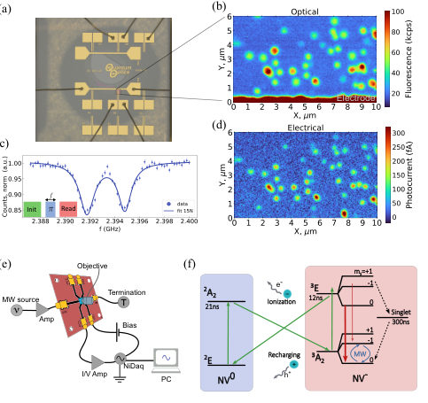
<figcaption class="paper-figure-caption"><b>Fig 1.</b> FIG. 1. Main characteristics of photoelectric readout of im- planted NV centers. (a) Microscope image of the diamond chip used for the experiments. The position of the electrodes coincides with the ion implantation regions. The confocal scanned area is marked on the selected electrode B2 near the top of two electrodes and the microwave strip line. The electrodes and microwave strip line pads are wire-bonded to the circuit board. (b) Optical and (d) photoelectrical con- focal imaging of the region near the electrode exhibiting the strongest signal, resolving multiple isolated NV centers. Ex- citation was performed at 560 nm (5 mW, CW) with an ap- plied bias of +3 V. (c) Pulsed optically...</figcaption>
</figure>
<figure class="paper-figure-card">
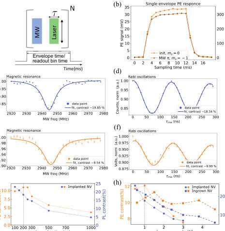
<figcaption class="paper-figure-caption"><b>Fig 2.</b> FIG. 2. Pulsed photoelectrically detected magnetic resonance (PDMR) and Rabi oscillations. (a) Pulse envelope sequence utilized to detect spin-depended photocurrent. It consists of a microwave (MW) spin manipulation pulse followed by in- tense readout (spin initialization) laser pulse which is being optimized. (b) Measured averaged PE response from the pulse envelope. Initialization to ms = 0 without microwave pulses (bright curve) and by using microwave π pulse to flip the spin into ms = −1. (c) optically detected magnetic resonance and (d) corresponding Rabi oscillations. Photoelectrically de- tected (e) magnetic resonance and (f) corresponding Rabi os- cillations. (g) PE(orange) and...</figcaption>
</figure>
<figure class="paper-figure-card">
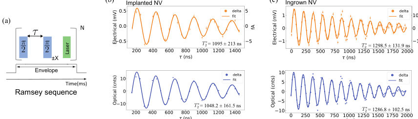
<figcaption class="paper-figure-caption"><b>Fig 3.</b> FIG. 3. Electrical and optical Ramsey T ∗ 2 dephasing measurements of implanted and ingrown NV centers. Ramsey sequence encoded in the pulse envelope (a) where blue π/2 are microwave control pulses and green is short 200 ns polarization/readout intense laser pulse. The Ramsey sequence for implanted single (b) and ingrown NV centers (c).</figcaption>
</figure>
</div>

<p><strong>Summary.</strong> The researchers successfully demonstrated photoelectrical readout and coherent control of single NV centers implanted near the surface of diamond. By using photocurrent measurements instead of fluorescence, they proved that these engineered shallow qubits can be read out electrically with coherence times matching deep centers. This breakthrough paves the way for integrating quantum sensing and computing components onto semiconductor chips.</p>
<p><strong>Why it may be interesting.</strong> This work directly addresses hardware implementation challenges in solid-state quantum memories. The ability to use electrical detection for spin readout is crucial for scalable, chip-based quantum devices, providing a pathway beyond purely optical methods.</p>
<details>
<summary>Detailed structure</summary>
<p><strong>Main problem.</strong> The primary challenge is demonstrating reliable photoelectrical readout and coherent control of single, shallowly implanted Nitrogen-Vacancy (NV) centers in diamond.</p>
<p><strong>Main result.</strong> Photoelectric readout was successfully demonstrated for shallow NV centers, showing that the measured Ramsey coherence time agrees with conventional fluorescence measurements. This establishes PE readout as a viable route for chip-integrated quantum sensing.</p>
<p><strong>Method.</strong> The study uses photoelectrical detection (measuring photocurrent) to read out spin states and measure dephasing times ($T_2^*$) via pulsed microwave sequences like Ramsey interferometry.</p>
<p><strong>Model / system.</strong> The system is single NV centers in diamond, specifically focusing on those that have been artificially implanted at shallow depths ($\sim 10$ nm) and subsequently covered by overgrowth. Measurements compare these to naturally occurring (ingrown) deep centers.</p>
<p><strong>Key observables.</strong> Ramsey dephasing time ($T_2^*$), spin contrast (photocurrent vs. fluorescence), Rabi oscillation visibility, and background photocurrent levels.</p>
<p><strong>Important parameters / regimes.</strong> Shallow implantation depth ($\sim 10$ nm), overgrowth thickness, applied bias voltage ($\pm 3 	ext{ V}$), and laser power/duration optimization.</p>
<p><strong>Assumptions / limitations.</strong> The PE readout assumes that the spin-dependent charge conversion mechanism is robust against background photocurrents from defects, which are mitigated by diamond overgrowth.</p>
<p><strong>Figures summary.</strong> Figures show optical/photoelectrical confocal imaging, pulsed ODMR and Rabi measurements comparing implanted vs. ingrown centers, and Ramsey $T_2^*$ decay curves demonstrating agreement between PE and PL readouts.</p>
<p><strong>Paper structure.</strong> The paper progresses by first establishing the feasibility of PE readout for shallow NVs, confirming coherence times match optical methods, then detailing the measurement techniques (Rabi/Ramsey), and finally discussing how overgrowth improves signal quality while noting power-dependent decoherence effects.</p>
</details>
<details>
<summary>Abstract</summary>
<p>Photoelectrical readout of the electronic spin state of the nitrogen-vacancy (NV) center in diamond is attracting significant interest due to the numerous advantages it possesses compared with conventional fluorescence readout. The higher charge carrier rate compared to the photon rate and the integration of the detection scheme on a chip can significantly advance quantum sensing and computing with color centers in diamond. Until now, photoelectric readout has been performed on ensembles of NV centers or single NV centers deep in ultrapure diamond substrates. However, many applications require the artificial creation and precise placement of shallow NV centers, and photoelectric detection of such centers has been challenging. Here we demonstrate photoelectrical readout and coherent control of the electronic spin of implanted shallow ($\sim$10 nm) NV centers buried by diamond overgrowth. The photoelectrically measured Ramsey $T_2^*$ agrees with conventional fluorescence readout and shows no measurable dependence on the readout photocurrent, for both shallow implanted and deep ingrown NV centers. We further find that overgrowth improves photoelectric readout by suppressing the background photocurrent. These results establish photoelectric readout as a viable route to chip-integrated, electrically detected nanoscale sensing and to spin registers based on engineered shallow NV centers.</p>
</details>
<p><sub><a href="#top">↑ back to top</a></sub></p>

<p><a id="paper-2607.16150"></a></p>
<h3 id="quantum-fisher-information-of-magnetic-quantum-phase-transition-on-kondo-lattice"><a href="http://arxiv.org/abs/2607.16150v1">Quantum Fisher information of magnetic quantum phase transition on Kondo lattice</a></h3>
<p><strong>Authors:</strong> Yuan Fang, Lei Chen, Mounica Mahankali, Fang Xie, Yiming Wang, Shouvik Sur, Qimiao Si<br>
<strong>Type:</strong> theory · <strong>Category:</strong> strongly correlated electrons · <strong>PDF:</strong> <a href="https://arxiv.org/pdf/2607.16150v1">https://arxiv.org/pdf/2607.16150v1</a><br>
<strong>Analysis basis:</strong> full PDF text, analyzed in chunks
<strong>Topic relevance:</strong> 🔥 <code>entanglement &amp; information structure</code> <strong>4/5</strong> · <code>Kondo &amp; dissipative impurity</code> <strong>3/5</strong> · <code>analog quantum simulation</code> <strong>2/5</strong> · <code>Keldysh / 2PI / non-Gaussian methods</code> <strong>1/5</strong> · <code>driven-dissipative phase transition</code> <strong>1/5</strong></p>
<div class="figure-strip-hint">↔ Scroll figures horizontally</div>
<div class="paper-figures-scroll">
<figure class="paper-figure-card">
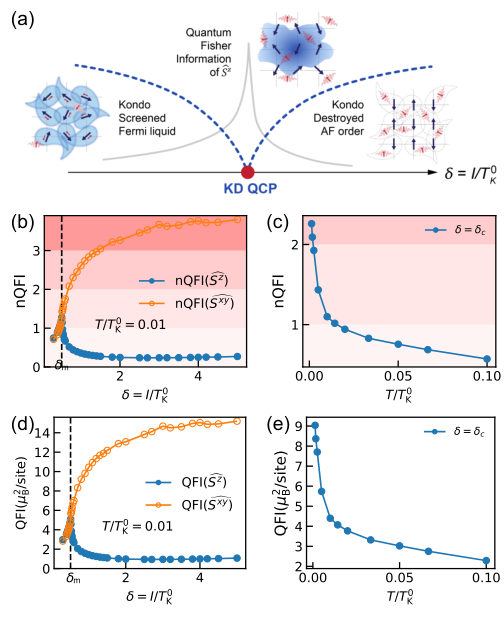
<figcaption class="paper-figure-caption"><b>Fig 1.</b> FIG. 1. (a) Quantum Fisher information of the operator c Sz reveals amplified entanglement at the Kondo destruction (KD) QCP, which separates a Kondo-screened Fermi-liquid phase and a Kondo-destroyed AF-ordered phase. Here the spin direction z is the direction of the magnetic order parame- ter. The control parameter δ = I/T 0 K is the ratio between the RKKY interaction and Kondo temperature. Adapted from Ref. [8]. (b) Normalized QFI density (nQFI) of the longitudi- nal c Sz i and transverse c Sx i (or c Sy i ) spin operators as a function of the control parameter δ = I/T 0 K, where I is the RKKY interaction and T 0 K is Kondo temperature. Here the temper- ature is fixed at a relatively low...</figcaption>
</figure>
<figure class="paper-figure-card">
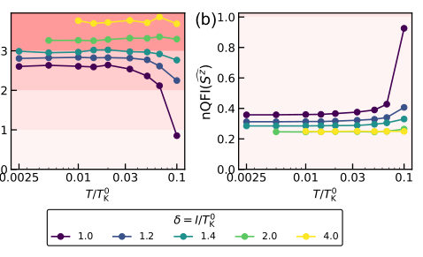
<figcaption class="paper-figure-caption"><b>Fig 2.</b> FIG. 2. (a) Normalized QFI density (nQFI) of transverse spin operator c Sx i (or c Sy i ) as a function of temperature at dif- ferent values of the control parameter δ = I/T 0 K in the AF- ordered part of the phase diagram [cf. Fig. 1(a)]; (b) nQFI of longitudinal spin operator c Sz i as a function of temperature at different δ.</figcaption>
</figure>
<figure class="paper-figure-card">
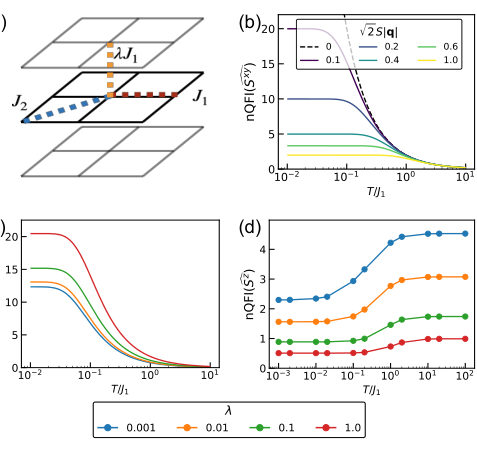
<figcaption class="paper-figure-caption"><b>Fig 3.</b> FIG. 3. (a) Schematic of the quasi-2D Heisenberg model. (b) nQFI of c Sx i as a function of temperature with different √</figcaption>
</figure>
<figure class="paper-figure-card">
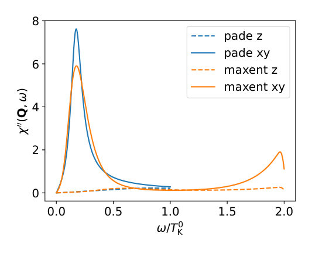
<figcaption class="paper-figure-caption"><b>Fig 4.</b> FIG. 4. Analytic continued χ′′(Q, ω) using Padé and maximum entropy for longitudinal and transverse spin operators. Here δ = I/T 0 K = 1.0 and T/T 0 K = 0.01. Both methods generate similar χ′′ at low frequency ω ∼T. Although maximum entropy has artificial features at large frequency ω ≫T does not affect our QFI calculation.</figcaption>
</figure>
<figure class="paper-figure-card">
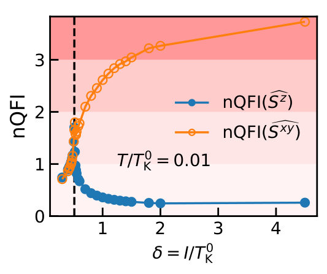
<figcaption class="paper-figure-caption"><b>Fig 5.</b> FIG. 5. Normalized QFI density determined through maximum entropy method. Only converged points are shown here.</figcaption>
</figure>
</div>

<p><strong>Summary.</strong> The authors use Quantum Fisher Information to characterize multipartite entanglement across the quantum phase transition in the Kondo lattice model. They demonstrate that transverse spin correlations are necessary to witness this entanglement specifically in the magnetically ordered state. This provides a powerful tool for understanding complex many-body physics in heavy fermion materials.</p>
<p><strong>Why it may be interesting.</strong> This work provides a concrete link between quantum information measures (QFI) and the fundamental physics of strongly correlated electron systems undergoing magnetic transitions, offering new diagnostic tools beyond standard thermodynamic measurements.</p>
<details>
<summary>Detailed structure</summary>
<p><strong>Main problem.</strong> The study investigates how multipartite entanglement, quantified by the Quantum Fisher Information (QFI), characterizes quantum phase transitions in strongly interacting magnetic systems.</p>
<p><strong>Main result.</strong> The QFI associated with transverse spin components reveals multipartite entanglement in the magnetically ordered Kondo-destroyed phase, while longitudinal components remain trivial.</p>
<p><strong>Method.</strong> The analysis employs theoretical techniques including Extended Dynamical Mean-Field Theory (EDMFT), Spin Wave Theory, and calculating the QFI via analytic continuation of dynamic susceptibilities.</p>
<p><strong>Model / system.</strong> The primary model is the Kondo lattice Hamiltonian, which captures the competition between local moment coupling (Kondo effect) and RKKY interactions. Theoretical insights are also drawn from the quasi-2D Heisenberg $J_1$-$J_2$ model.</p>
<p><strong>Key observables.</strong> Quantum Fisher Information density ($f_Q$), normalized QFI ($    ext{nQFI}$), transverse vs. longitudinal spin components ($\mathbf{c}<em Sz>{S\pm x}, \mathbf{c}</em>$), and the dynamical susceptibility $\chi''$.</p>
<p><strong>Important parameters / regimes.</strong> The control parameter is $\delta = I/T_{0K}$, which tunes the system across different magnetic regimes, including the Kondo-destroyed AF phase ($\delta > \delta_m$).</p>
<p><strong>Assumptions / limitations.</strong> Approximations include using linear spin wave theory for the ordered phase and employing analytic continuation methods (Padé, maximum entropy) to extract real-frequency data from imaginary time simulations.</p>
<p><strong>Figures summary.</strong> Figures illustrate QFI behavior across the transition ($\delta$ dependence), temperature evolution of $ ext{nQFI}$ for different spin components in the AF phase, and comparisons between different numerical calculation methods (Padé vs. Maximum Entropy).</p>
<p><strong>Paper structure.</strong> The paper systematically analyzes the Kondo lattice model by first establishing the theoretical framework linking QFI to magnetic susceptibilities. It then applies this formalism across various regimes—paramagnetic, Fermi-liquid, and AF-ordered—to pinpoint which spin operators best witness entanglement in each phase.</p>
</details>
<details>
<summary>Abstract</summary>
<p>Strange metals exemplify highly collective quantum many-body systems that call for new means of characterization, and there is considerable potential for quantum information approaches contributing to the cause. We investigate multipartite entanglement across the quantum phase transition of a Kondo lattice model using the quantum Fisher information (QFI). We show that the QFI associated with the spin components transverse to the order parameter characterizes the destruction of heavy quasiparticles in the Kondo-destroyed magnetic-ordered phase. The physical origin of this observation is elucidated through an analysis of the antiferromagnetic Heisenberg model. We propose to test the results in terms of both unpolarized and polarized inelastic neutron scattering measurements in the ordered part of the heavy fermion phase diagram. Our findings illustrate how different operators of a many-body system can be employed to not only witness multipartite entanglement in different sectors and but also elucidate the overall physics across different parts of the phase diagram.</p>
</details>
<p><sub><a href="#top">↑ back to top</a></sub></p>

<p><a id="paper-2607.15874"></a></p>
<h3 id="the-statistical-disturbance-bound-of-quantum-measurements"><a href="http://arxiv.org/abs/2607.15874v1">The statistical disturbance bound of quantum measurements</a></h3>
<p><strong>Authors:</strong> Ties-A. Ohst, Sebastian Schlösser, Roope Uola<br>
<strong>Type:</strong> theory · <strong>Category:</strong> quantum information and computing · <strong>PDF:</strong> <a href="https://arxiv.org/pdf/2607.15874v1">https://arxiv.org/pdf/2607.15874v1</a><br>
<strong>Analysis basis:</strong> full PDF text, analyzed in chunks
<strong>Topic relevance:</strong> 🔥 <code>quantum measurements</code> <strong>4/5</strong> · <code>measurement-induced transitions</code> <strong>3/5</strong> · <code>entanglement &amp; information structure</code> <strong>2/5</strong> · <code>Keldysh / 2PI / non-Gaussian methods</code> <strong>1/5</strong> · <code>correlated / nonlocal dissipation</code> <strong>1/5</strong></p>
<div class="figure-strip-hint">↔ Scroll figures horizontally</div>
<div class="paper-figures-scroll">
<figure class="paper-figure-card">
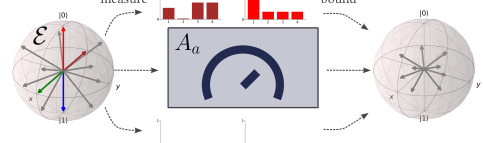
<figcaption class="paper-figure-caption"><b>Fig 1.</b> Figure 1: Sketch of the statistical disturbance estimation of a measurement with uncharacterised measurement effects Aa. A sufficiently large set of probe states ρi (colored arrows) is prepared and measured to determine the corresponding conditional probabilities p(a|i) (col- ored bar charts). These measurement statistics are then processed using the weighted state exclusion technique to obtain an upper bound on the maximum average fi- delity achievable by any compatible measurement chan- nel with respect to the input ensemble E.</figcaption>
</figure>
<figure class="paper-figure-card">
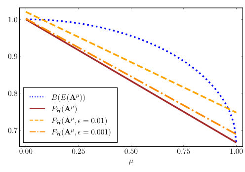
<figcaption class="paper-figure-caption"><b>Fig 2.</b> Figure 2: Comparison between depolarisation noise and sample loss for a qubit computational-basis measure- ment. The solid curve shows the statistical disturbance bound for a lossy measurement as a function of the transmission probability µ. The dotted curve shows the information-disturbance bound B2(E(Aµ)), which co- incides with the statistical disturbance bound of the de- polarised measurement with the same value of µ. Thin solid curves illustrate the robust weighted state exclu- sion bounds for different preparation uncertainties ϵ. Even for moderate preparation errors, the statistical dis- turbance bound remains significantly tighter than the information-disturbance relation over a...</figcaption>
</figure>
<figure class="paper-figure-card">
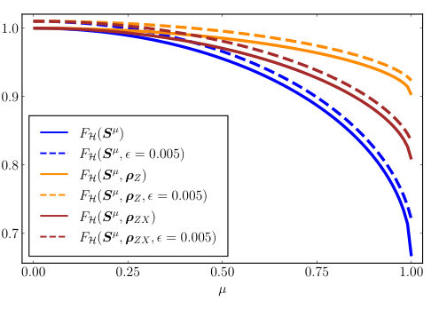
<figcaption class="paper-figure-caption"><b>Fig 3.</b> Figure 3: Weighted state exclusion with incomplete state preparations. The lowest solid curve shows the exact statistical disturbance bound for the noisy SIC POVM defined in Eq. (31). The upper solid curves show the ex- perimentally accessible weighted state exclusion bounds obtained using only the preparation sets ρZ and ρZX. Neither preparation set is sufficient for detector tomog- raphy, yet both certify nonzero measurement distur- bance. Dashed curves show the corresponding robust bounds for preparation uncertainty ϵ = 0.005.</figcaption>
</figure>
<figure class="paper-figure-card">
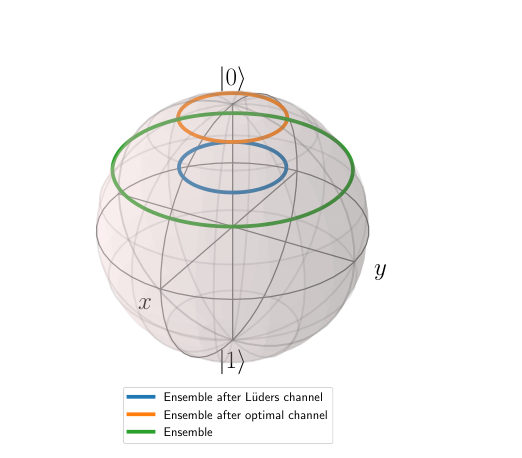
<figcaption class="paper-figure-caption"><b>Fig 4.</b> Figure 4: The latitude ensemble Eθ for a polar angle θ in the northern hemisphere is represented by a ring on the Bloch sphere at fixed latitude. The Lüders instrument associated with the amplitude-damped measurement acts as a partially dephasing channel, reducing the ra- dius of the ring while leaving its polar angle unchanged. By contrast, concatenating the Lüders instrument with an outcome-dependent bit flip shifts the ring further towards the north pole, resulting in a higher average fidelity between the input and output states.</figcaption>
</figure>
<figure class="paper-figure-card">
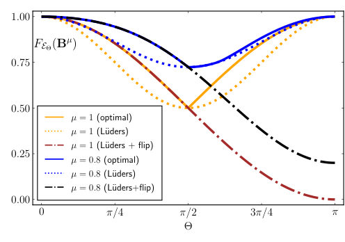
<figcaption class="paper-figure-caption"><b>Fig 5.</b> Figure 5: Statistical disturbance bounds for latitude ensembles. The statistical disturbance bound of the amplitude-damped measurement in Eq. (32) is shown as a function of the polar angle θ. For latitude ensembles in the northern hemisphere, the Lüders instrument is no longer optimal. Instead, the instrument augmented with an outcome-dependent bit flip achieves the optimal average fidelity.</figcaption>
</figure>
</div>

<p><strong>Summary.</strong> The paper introduces the statistical disturbance bound, a novel measure connecting the statistics of a quantum measurement (POVM) to the minimum state disturbance it must cause. By formulating this as an SDP problem, the authors provide a powerful tool that can be experimentally determined without full knowledge of the measurement apparatus. This has direct applications in quantifying security limits for quantum information tasks like randomness generation.</p>
<p><strong>Why it may be interesting.</strong> This work provides a rigorous, quantifiable tool—the statistical disturbance bound—to assess the fundamental trade-off between information gain and physical disturbance in quantum measurements, which is crucial for device-independent security proofs.</p>
<details>
<summary>Detailed structure</summary>
<p><strong>Main problem.</strong> To establish a fundamental 'statistical disturbance bound' that quantifies the minimum state disturbance induced by any quantum measurement channel compatible with observed statistical outcomes.</p>
<p><strong>Main result.</strong> The derived bound, $FE(A)$, successfully links the statistical description (POVM) to the physical disturbance, proving it is superior to existing information-disturbance relations because it constrains the entire statistical structure.</p>
<p><strong>Method.</strong> The bound is formulated as an optimization problem solved via Semidefinite Programming (SDP), allowing for efficient computation and theoretical derivation of tight limits.</p>
<p><strong>Model / system.</strong> The analysis concerns quantum measurements on a $d$-dimensional system, characterized by a Positive Operator-Valued Measure (POVM) $\{A_a\}$, and the associated dynamical process described by an instrument $I$.</p>
<p><strong>Key observables.</strong> Average fidelity ($F_E(A)$), Informativeness ($E(A)$), and the eavesdropper's guessing probability ($p_g$).</p>
<p><strong>Important parameters / regimes.</strong> The dimension of the system ($d$), the specific input state ensemble ($\mu_E$, e.g., Haar ensemble $H$), and the POVM elements $\{A_a\}$.</p>
<p><strong>Assumptions / limitations.</strong> The initial focus is on pure input states, though extensions consider general ensembles; the method relies on solving SDPs.</p>
<p><strong>Figures summary.</strong> Figure 1 sketches the weighted state exclusion technique using probe states. Figure 6 illustrates how the certified fidelity bound restricts Eve's guessing probability in quantum randomness generation protocols as a function of dimension $d$.</p>
<p><strong>Paper structure.</strong> The paper progresses by defining the statistical disturbance bound via optimization, solving it for specific ensembles (like Haar), proving its relationship to informativeness, and finally applying it to practical scenarios like bounding eavesdropper knowledge.</p>
</details>
<details>
<summary>Abstract</summary>
<p>Quantifying the disturbance caused by a quantum measurement typically requires detailed knowledge of the underlying measurement channel. In this work, we introduce a statistical disturbance bound, which connects the statistical properties of a quantum measurement to the state disturbance induced by any compatible measurement channel. Specifically, we show that the average fidelity between input and output with respect to an arbitrary ensemble of pure input states is fundamentally bounded in terms of the measurement, described as a positive operator-valued measure (POVM). We further develop the weighted state exclusion technique, which enables an experimental determination of the statistical disturbance bound without requiring explicit knowledge of the measurement effects. To see the advantages of our approach over existing information-disturbance relations, we show that our bound distinguishes between measurements with equivalent informativeness. Furthermore, we demonstrate that the weighted state exclusion technique can detect and quantify measurement-induced disturbance using state preparations that are insufficient for tomographic reconstruction of the measurement operators. Finally, we illustrate how disturbance bounds defined with respect to specific input ensembles can be used to bound an eavesdropper's guessing probability in a simple protocol for quantum randomness generation.</p>
</details>
<p><sub><a href="#top">↑ back to top</a></sub></p>

<p><a id="paper-2607.15461"></a></p>
<h3 id="generation-and-detection-of-squeezed-light-on-a-single-silicon-photonic-chip"><a href="http://arxiv.org/abs/2607.15461v1">Generation and detection of squeezed light on a single silicon photonic chip</a></h3>
<p><strong>Authors:</strong> Oliver M. Green, Bethany Puzio, Rowan A. Hoggarth, Rachel N. Clark, Edward C. R. Deacon, Alex S. Clark, Jonathan C. F. Matthews, Giacomo Ferranti<br>
<strong>Type:</strong> experiment · <strong>Category:</strong> quantum information and computing · <strong>PDF:</strong> <a href="https://arxiv.org/pdf/2607.15461v1">https://arxiv.org/pdf/2607.15461v1</a><br>
<strong>Analysis basis:</strong> full PDF text, analyzed in chunks
<strong>Topic relevance:</strong> 🔥 <code>quantum optics experiment</code> <strong>4/5</strong> · <code>QC/QI experiment</code> <strong>2/5</strong> · <code>analog quantum simulation</code> <strong>1/5</strong> · <code>interference shaping light</code> <strong>1/5</strong> · <code>quantum measurements</code> <strong>1/5</strong></p>
<div class="figure-strip-hint">↔ Scroll figures horizontally</div>
<div class="paper-figures-scroll">
<figure class="paper-figure-card">
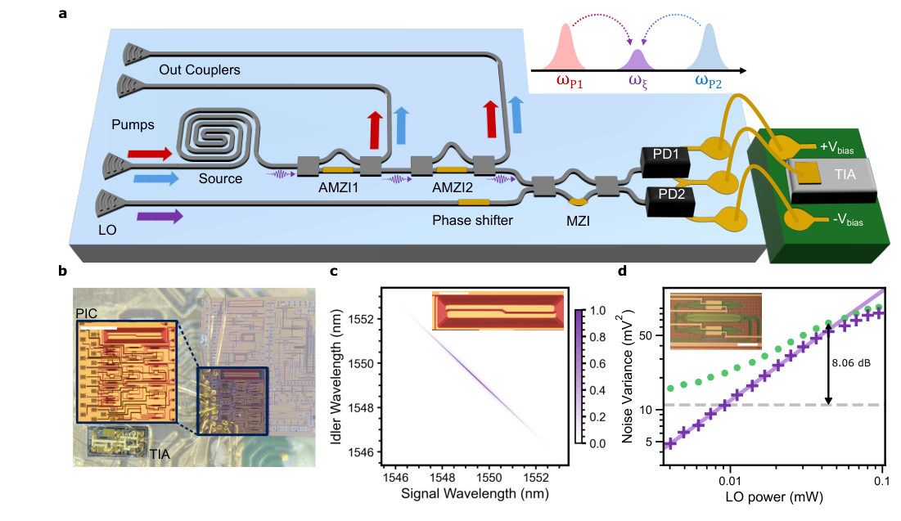
<figcaption class="paper-figure-caption"><b>Fig 1.</b> FIG. 1. The photonic chip (a) Layout of the SOI photonic integrated circuit (PIC). A bi-chromatic pump and local oscillator (LO) couple into the PIC via separate grating couplers. The pump generates degenerate squeezing, as shown in the insert, by spontaneous four-wave mixing in a spiral waveguide. Two cascaded asymmetric Mach Zehnder interferometers (AMZIs) separate squeezed light from pump. The former is then routed to the on-chip homodyne detector, composed of waveguide- coupled germanium photodiodes at each output of a Mach Zehnder interferometer (MZI). The LO field couples directly from its input grating coupler into the homodyne MZI, where it interferes with the squeezed light. (b)...</figcaption>
</figure>
<figure class="paper-figure-card">
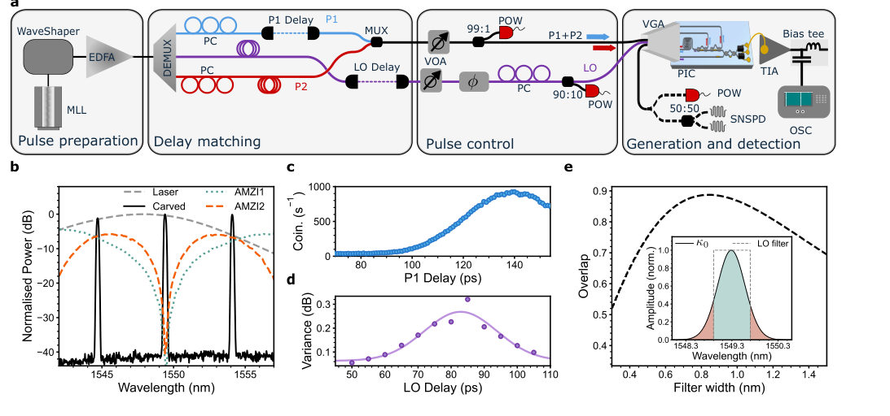
<figcaption class="paper-figure-caption"><b>Fig 2.</b> FIG. 2. Dual-pump preparation scheme (a) Schematic of the experiment, divided into four stages. Pulse preparation: Three spectral lines carved by the WaveShaper from a spectrally-broad pulsed pump enter an erbium-doped fibre amplifier (EDFA). Delay matching: The three wavelengths are demultiplexed (DEMUX) and tunable delay lines correct the temporal mismatch between them. Pumps P1 and P2 are recombined in a wavelength multiplexer (MUX) to act as a bi-chromatic pump field. A variable optical attenuator (VOA) sets the pump intensity which is monitored by a 99:1 splitter and a power meter (POW). A VOA and phase modulator (ϕ) are used to control the power and phase of the local oscillator (LO)....</figcaption>
</figure>
<figure class="paper-figure-card">
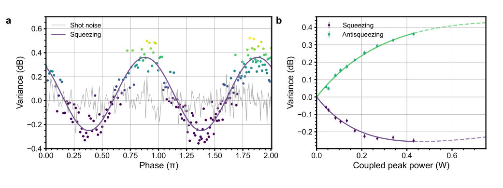
<figcaption class="paper-figure-caption"><b>Fig 3.</b> FIG. 3. Squeezed light measurement (a) The evolution of the variance of the signal recorded on the integrated homodyne detector as the LO phase is swept, exhibiting clear sub-shot noise fluctuations reaching 0.25(1) dB of squeezing. (b) The dependence of the squeezing (purple circles) and antisqueezing (green squares) generated and detected on chip as peak pump power is varied, reaching a maximum detected squeezing level of 0.25(1) dB. The data is fitted with the theoretical scaling from Eq. 2. An extension of the fit to higher optical powers (dashed lines) shows generated squeezing saturates due to the effects of nonlinear loss.</figcaption>
</figure>
</div>

<p><strong>Summary.</strong> The paper reports on the successful demonstration of generating and detecting squeezed light entirely on a single silicon photonic chip. By integrating the nonlinear source (SFWM) and the homodyne detector onto one SOI platform, they overcome previous limitations in footprint and complexity. This work advances the feasibility of scalable, room-temperature quantum photonic devices for applications like quantum sensing.</p>
<p><strong>Why it may be interesting.</strong> This is highly relevant as it provides a concrete, scalable platform for continuous-variable quantum optics experiments, directly addressing integration challenges crucial for building quantum networks or sensors.</p>
<details>
<summary>Detailed structure</summary>
<p><strong>Main problem.</strong> The necessity of generating and detecting quantum states of light on a single integrated photonic device to scale quantum photonics into useful technologies.</p>
<p><strong>Main result.</strong> The authors demonstrated the monolithic generation and detection of squeezed light on a silicon-on-insulator chip, achieving a measured squeezing level of 0.25(1) dB.</p>
<p><strong>Method.</strong> Squeezed light was generated via spontaneous four-wave mixing in a silicon waveguide and detected using an integrated pulsed homodyne detector configuration.</p>
<p><strong>Model / system.</strong> The platform is a single monolithic Silicon-on-Insulator (SOI) photonic integrated circuit, which integrates the nonlinear source (SFWM) and the detection apparatus (homodyne detector) at room temperature.</p>
<p><strong>Key observables.</strong> Measured squeezing level (0.25(1) dB), inferred entering squeezing (0.42(2) dB), total generated squeezing (0.83(3) dB), and nonlinear refractive index ($n_2$).</p>
<p><strong>Important parameters / regimes.</strong> Room temperature operation, monolithic integration footprint ($ ext{1.44 mm}^2$), pulsed laser source.</p>
<p><strong>Assumptions / limitations.</strong> The analysis includes detailed consideration of contributions from waveguide propagation loss and detection inefficiency; the primary limitation noted is intrinsic nonlinear loss in SOI waveguides.</p>
<p><strong>Figures summary.</strong> Figures illustrate the PIC layout, the dual-pump preparation scheme involving multiple optical components (WaveShapers, MZI), and the measurement process showing sinusoidal variance variation with LO phase and dependence on pump power.</p>
<p><strong>Paper structure.</strong> The work details the physical setup using an SOI chip for monolithic operation. It covers the generation mechanism (SFWM), the complex detection scheme (pulsed homodyne detector with AMZIs), rigorous characterization of squeezing via quadrature measurements, and analysis of loss mechanisms.</p>
</details>
<details>
<summary>Abstract</summary>
<p>The ability to generate and detect quantum states of light on a single integrated photonic device is essential to scale quantum photonics into useful quantum technologies. Integrating the required capabilities into complementary-metal-oxide-semiconductor compatible monolithic chips can reduce cost and unlock new functionality through miniaturisation. In this work we demonstrate a single silicon-on-insulator photonic integrated circuit for the monolithic generation and detection of quantum light on a commercially available platform that operates entirely at room temperature. Specifically, we leverage spontaneous four-wave mixing in silicon waveguides to produce squeezed light which is subsequently detected by photodiodes operating in a pulsed homodyne detector configuration on the same chip as the source. We directly measure $0.25(1)$ dB of squeezing, including contributions from waveguide propagation loss and detection inefficiency, and include a detailed analysis of the impact of nonlinear loss on the squeezing levels achievable using this platform.</p>
</details>
<p><sub><a href="#top">↑ back to top</a></sub></p>

<p><a id="paper-2607.16070"></a></p>
<h3 id="operator-entanglement-in-quantum-dynamics-simulations-formalism-and-analysis-tools"><a href="http://arxiv.org/abs/2607.16070v1">Operator Entanglement in Quantum Dynamics Simulations: Formalism and Analysis Tools</a></h3>
<p><strong>Authors:</strong> Tzu Yu Wang, Michael Schuurman, Simon Neville<br>
<strong>Type:</strong> theory · <strong>Category:</strong> other · <strong>PDF:</strong> <a href="https://arxiv.org/pdf/2607.16070v1">https://arxiv.org/pdf/2607.16070v1</a><br>
<strong>Analysis basis:</strong> full PDF text, analyzed in chunks
<strong>Topic relevance:</strong> 🔥 <code>entanglement &amp; information structure</code> <strong>4/5</strong> · <code>methods for driven-dissipative</code> <strong>1/5</strong> · <code>non-equilibrium dynamics</code> <strong>1/5</strong></p>
<div class="figure-strip-hint">↔ Scroll figures horizontally</div>
<div class="paper-figures-scroll">
<figure class="paper-figure-card">
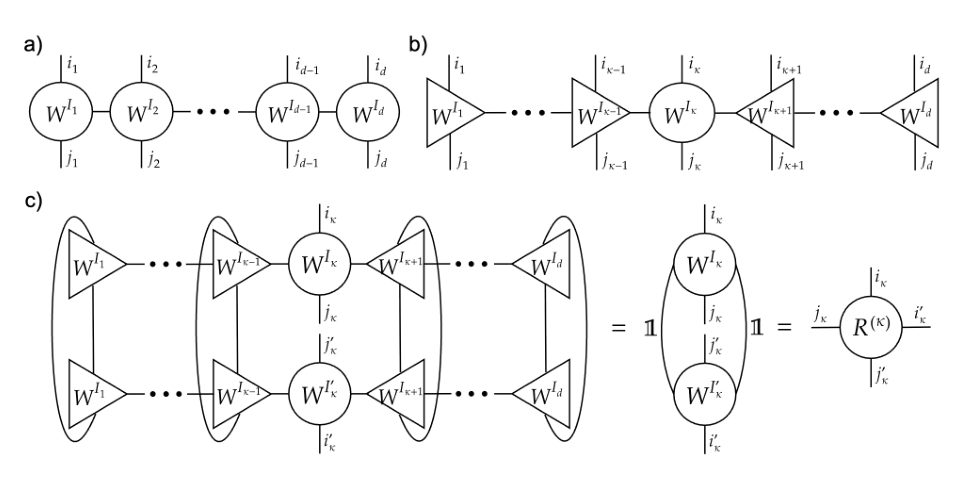
<figcaption class="paper-figure-caption"><b>Fig 1.</b> Figure 1: Diagrammatic representation for obtaining the 1-SRDM from MPOs. a) General MPO diagrammatic representation. b) Mixed canonical form with the right (left) pointing triangles representing a left (right) orthogonal tensor. c) Obtaining the 1-SRDM from a mixed canonical form. In this case the traces over the right and left orthogonal tensors evaluates to the identity. All the 1-SRDMs can be obtained by shifting the orthogonality centre down the chain and repeating procedure.</figcaption>
</figure>
<figure class="paper-figure-card">
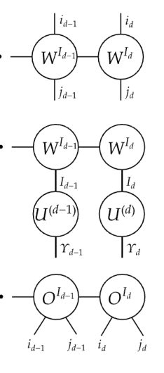
<figcaption class="paper-figure-caption"><b>Fig 2.</b> Figure 2: Diagrammatic representation for obtaining the Natural MPO</figcaption>
</figure>
<figure class="paper-figure-card">
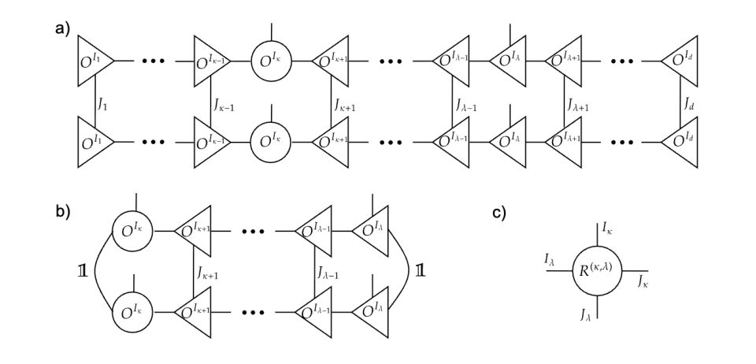
<figcaption class="paper-figure-caption"><b>Fig 3.</b> Figure 3: Diagrammatic representation for how the 2-SRDM is constructed from an MPO. a) The orthogonality center is set at one of the degree of freedom. b) The core tensors to the left and right of the κ and λ degree of freedom evaluates to identity due to orthonormality. The core tensors between κ and λ needs to be contracted explicitly, but the bond dimension of Jκ can be significantly less than the primitive operator basis Iκ. c) The 2-SRDM in the NSPO basis has dimensions R(κ,λ) ∈RMκMλ×MκMλ</figcaption>
</figure>
<figure class="paper-figure-card">
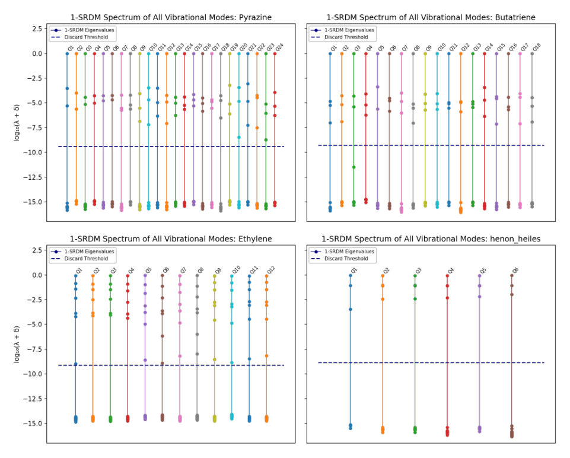
<figcaption class="paper-figure-caption"><b>Fig 4.</b> Figure 4: 1-SRDM eigenvalue distribution for pyrazine, butatriene, sextic ethylene and Henon-Heiles Hamiltonian. Each vertical line in the plot corresponds to the 1-SRDM for one of the modes, with the mode number labelled at the top. The dashed horizontal line is the threshold value (δ = 10−8/d). The percentage of retained eigenvalues relative to the total number has a maximum rmax and minimum rmin value of: rmax = 0.91% and rmin = 0.68% for pyrazine and butatriene, rmax = 5.79% and rmin = 4.96% for ethylene, and rmax = rmin = 0.68% for Henon-Heiles</figcaption>
</figure>
<figure class="paper-figure-card">
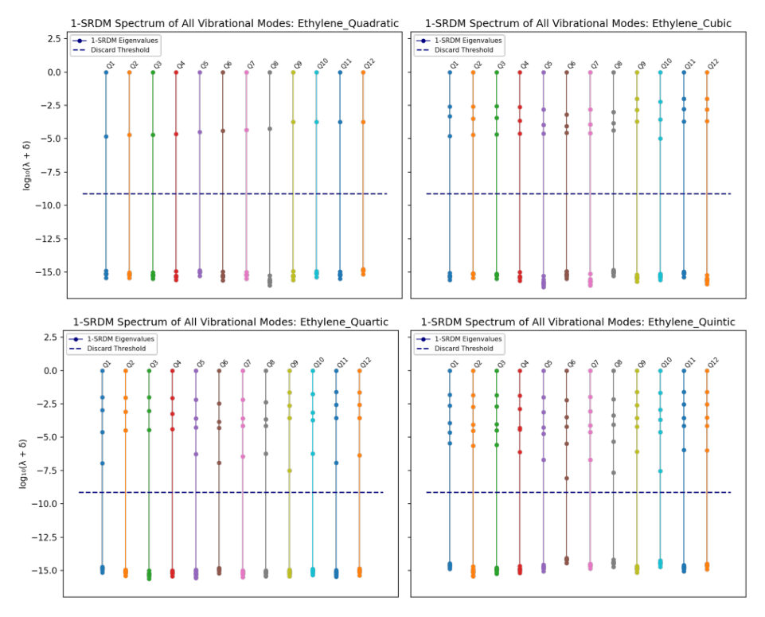
<figcaption class="paper-figure-caption"><b>Fig 5.</b> Figure 5: Compressibility of different order ethylene expansion. The percentage of retained eigenvalues relative to the total number has a maximum rmax and minimum rmin value of: rmax = rmin = 4.96% for the quintic model, rmax = 4.13% and rmin = 3.31% for the quartic model, and rmax = rmin = 3.31% for the cubic model</figcaption>
</figure>
</div>

<p><strong>Summary.</strong> This paper develops advanced formalisms, including Super Reduced Density Matrices (SRDMs) and Super Mutual Information (SMI), to quantify entanglement within operators governing quantum dynamics. By extending state-based concepts to operator spaces, it provides a powerful method for compressing Hamiltonians and systematically revealing subtle coupling mechanisms in molecular systems like those found in vibronic chemistry.</p>
<p><strong>Why it may be interesting.</strong> This is highly relevant as it provides rigorous mathematical tools to analyze correlations in complex molecular dynamics simulations that are often intractable due to the exponential scaling of the Hilbert space.</p>
<details>
<summary>Detailed structure</summary>
<p><strong>Main problem.</strong> The core challenge addressed is representing quantum states and operators in high-dimensional molecular systems where basis size scales exponentially.</p>
<p><strong>Main result.</strong> The authors introduce Super Reduced Density Matrices (SRDMs) and Super Mutual Information (SMI), demonstrating that these tools allow for systematic, quantitative analysis of operator entanglement and reveal both direct and indirect couplings in vibronic Hamiltonians with high compression accuracy.</p>
<p><strong>Method.</strong> The work extends state-based entanglement measures to the space of linear operators using the Hilbert-Schmidt space formalism. Key techniques include defining SRDMs and developing efficient numerical algorithms for their calculation.</p>
<p><strong>Model / system.</strong> The analysis is applied to quantum dynamics simulations involving vibrational and vibronic Hamiltonians, which are prototypical models in molecular physics. The methods are generalizable to any system described by operators on a Hilbert space.</p>
<p><strong>Key observables.</strong> Super Reduced Density Matrices (SRDMs), Super Mutual Information (SMI), Operator Entanglement Entropy (OEE), and Natural Single Particle Operators (NSPOs).</p>
<p><strong>Important parameters / regimes.</strong> The accuracy of compression is controlled by the eigenvalues ($\lambda_{iA}$) of the reduced density operators.</p>
<p><strong>Assumptions / limitations.</strong> The analysis relies on extending concepts from state vectors to operators in the Hilbert-Schmidt space, and computational efficiency depends on the structure (unit, diagonal, or full) of underlying factor matrices used in SOP representations.</p>
<p><strong>Figures summary.</strong> Not specified by notes; however, the discussion references FLOP scaling analysis for calculating tensor components.</p>
<p><strong>Paper structure.</strong> The paper progresses from reviewing state truncation error bounds to defining operator generalizations (SRDMs), introducing entanglement measures like SMI, and finally developing efficient algorithms for computing these higher-order tensors using SOP factorizations.</p>
</details>
<details>
<summary>Abstract</summary>
<p>We review the framework of operator Hilbert space and introduce the one- and two-particle super reduced density matrices (1-SRDMs and 2-SRDMs), as well as the super mutual information (SMI). The eigenvectors of the 1-SRDMs define what we term natural single particle operator bases, and provide a way to compress vibrational and vibronic Hamiltonians with controlled error. The SMI is defined from the operator entanglement entropy of the 1-SRDMs and 2-SRDMs, and captures the correlation between operators acting on different one-mode subspaces, which may be used to reveal and quantify both direct and indirect couplings that might otherwise be difficult to extract. Efficient numerical approaches for the calculation of SRDMs and the SMI are developed and applied to a set of prototypical vibrational and vibronic Hamiltonians, as well as approximations to the corresponding time-evolution operators. Through this, we demonstrate that: (i) commonly used vibronic Hamiltonians are amenable to extremely high levels of compression without compromising accuracy, and; (ii) SMI analysis can be used to systematically and quantitatively reveal both direct and indirect couplings that might otherwise be difficult to extract, including indirect couplings of vibrational modes via intermediary electronic-vibrational interactions.</p>
</details>
<p><sub><a href="#top">↑ back to top</a></sub></p>

<p><a id="paper-2607.15688"></a></p>
<h3 id="boundary-phase-control-of-sequentially-addressed-trapped-ion-zz-interactions"><a href="http://arxiv.org/abs/2607.15688v1">Boundary-Phase Control of Sequentially Addressed Trapped-Ion ZZ Interactions</a></h3>
<p><strong>Authors:</strong> Chun-Yang Luan, Haiyu Ding, Cheng-Kang Pan, Xiangjie Li, Lin Cheng, Gangxi Wang, Yuting Lei, Peilin Zheng, Shixin Hu, Xiang Zhang, Fei Wang<br>
<strong>Type:</strong> theory · <strong>Category:</strong> other · <strong>PDF:</strong> <a href="https://arxiv.org/pdf/2607.15688v1">https://arxiv.org/pdf/2607.15688v1</a><br>
<strong>Analysis basis:</strong> full PDF text, analyzed in chunks
<strong>Topic relevance:</strong> 🔥 <code>QC/QI experiment</code> <strong>4/5</strong> · <code>quantum measurements</code> <strong>1/5</strong></p>
<div class="figure-strip-hint">↔ Scroll figures horizontally</div>
<div class="paper-figures-scroll">
<figure class="paper-figure-card">
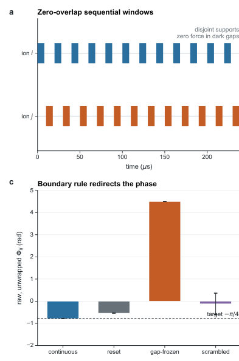
<figcaption class="paper-figure-caption"><b>Fig 1.</b> Fig. 1 Zero-overlap mechanism and boundary-phase control discriminant. (a) Mechanism baseline A with disjoint target windows and zero dark-gap force. (b) Ordered increments and signed symplectic area. (c) Raw, unwrapped Φij at zero leakage; the scrambled bar shows one standard deviation. (d) Conditional contrast evaluated within the linear reduced model. The matched-envelope protocol in Fig. 4 removes envelope differences between the boundary-phase controls.</figcaption>
</figure>
<figure class="paper-figure-card">
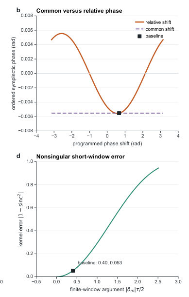
<figcaption class="paper-figure-caption"><b>Fig 2.</b> Fig. 2 Symplectic window geometry and exact finite-duration kernel. (a) Exact win- dow increments and their oriented parallelogram; in two-dimensional phase space, the Weyl product Im(δαjδα∗ i ) is the signed oriented area. (b) Common- and relative-phase shifts; the square marks the baseline. (c) Exact and short-window phases versus detuning. (d) The nonsingular kernel error ϵK = |1 −sinc2(δτ/2)|, which remains finite when the exact pair phase crosses zero.</figcaption>
</figure>
<figure class="paper-figure-card">
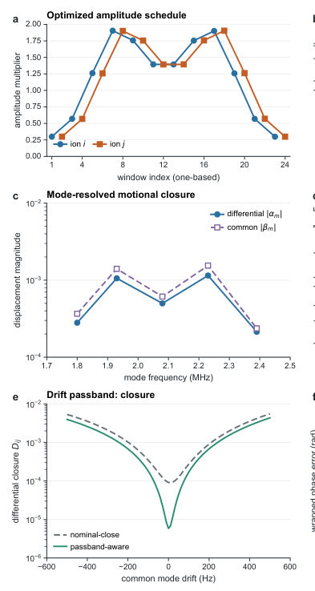
<figcaption class="paper-figure-caption"><b>Fig 3.</b> Fig. 3 Optimized zero-overlap waveform, idealized single-projector motion, and drift passband. (a,b) One-based amplitudes and relative phases for the passband-aware schedule. (c) Mode-resolved differential displacement α and projector-common displacement β. (d) Reduced- channel errors within the coherent Hamiltonian model after deterministic local-Z correction. (e) Closure and (f) absolute target-referenced wrapped phase error under common-mode drift.</figcaption>
</figure>
<figure class="paper-figure-card">
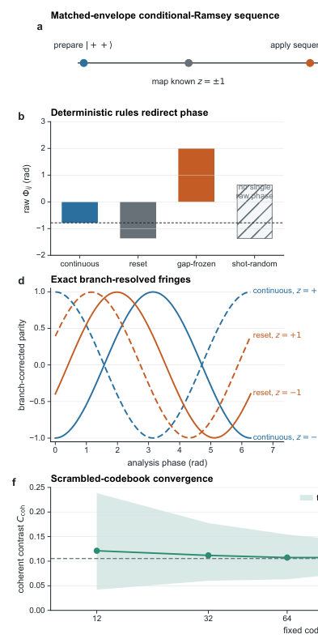
<figcaption class="paper-figure-caption"><b>Fig 4.</b> Fig. 4 Matched-envelope conditional-Ramsey test of the reduced boundary-phase model. (a) Preparation, branch mapping, zero-overlap interaction, virtual-Z correction, and parity analysis. (b,c) Raw phase and reduced-model contrast. (d) Continuous and reset fringes. (e) Ideal and nuisance-aware detected-shot bounds. (f) Fixed-codebook Ccoh convergence; the dashed line is the shot-random limit.</figcaption>
</figure>
<figure class="paper-figure-card">
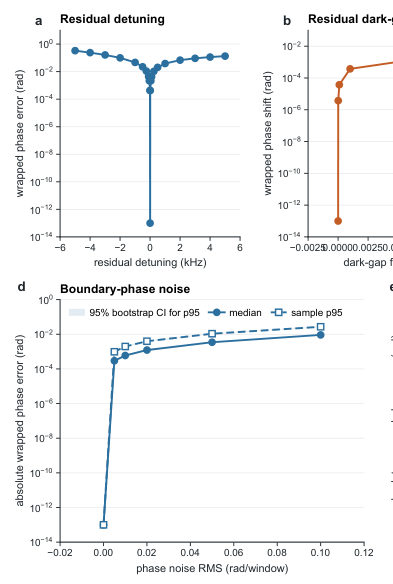
<figcaption class="paper-figure-caption"><b>Fig 5.</b> Fig. 5 Simulated robustness to control imperfections. (a–c) Deterministic detuning, residual dark-gap-force, and common-mode-drift scans. (d,e) Seeded boundary-phase noise and timing jitter: circles are medians, squares are p95 values, and bars are 95% bootstrap intervals for p95. Stochastic grids use 512 realizations per point.</figcaption>
</figure>
</div>

<p><strong>Summary.</strong> The paper develops advanced theoretical protocols to precisely control two-qubit ZZ interactions in trapped ions using alternating addressing channels. By designing matched-envelope controls, the authors successfully isolate the desired boundary-phase response from common experimental errors like closure error. The key finding is that while sequential addressing offers a distinct control mechanism, it incurs a higher resource cost (force action) than simultaneous methods unless channel concurrency is severely limited.</p>
<p><strong>Why it may be interesting.</strong> This work provides detailed, quantitative guidelines on optimizing gate sequences in trapped ions by rigorously separating coherent phase control from motional error sources, which is crucial for scaling up quantum computation using ion traps.</p>
<details>
<summary>Detailed structure</summary>
<p><strong>Main problem.</strong> The paper addresses how to control two-qubit ZZ interactions in trapped ions when using sequentially addressed force windows, specifically designing controls that isolate the boundary-phase response from experimental errors.</p>
<p><strong>Main result.</strong> Sequential addressing can provide an experimentally testable control resource for inter-window phase generation, although it requires a significantly higher normalized squared-force action compared to simultaneous addressing schemes.</p>
<p><strong>Method.</strong> The authors use matched-envelope conditional-Ramsey protocols and analyze the ordered symplectic product of displacement vectors derived from a near-resonant Hamiltonian description.</p>
<p><strong>Model / system.</strong> The system is trapped ions interacting via motion-mediated gates, modeled using a linear spin-dependent-force Hamiltonian within the Rotating-Wave Approximation (RWA). The dynamics are analyzed by calculating pair phases ($\Phi_{ij}$) from ordered symplectic products of displacement vectors.</p>
<p><strong>Key observables.</strong> Pair phase ($\Phi_{ij}$), conditional contrast ($C_{	ext{cond}}$), motional closure error ($D_{ij}$), and the required normalized squared-force action for different addressing schemes.</p>
<p><strong>Important parameters / regimes.</strong> The relative phase between successive windows, which acts as an independent control coordinate; the ratio of force actions between sequential vs. simultaneous control (e.g., 1.826 times).</p>
<p><strong>Assumptions / limitations.</strong> Calculations rely on the linear RWA Hamiltonian and assume ideal dark gaps where external forces are zero; the results are model-based predictions.</p>
<p><strong>Figures summary.</strong> Figures compare phase rules affecting raw ZZ phase versus conditional contrast, illustrate symplectic window geometry errors, summarize optimized waveforms showing reduced motional closure, and detail resource trade-offs between sequential and simultaneous control.</p>
<p><strong>Paper structure.</strong> The paper develops the theoretical framework for calculating pair phases using ordered symplectic products for nonoverlapping windows. It then introduces matched-envelope protocols to separate phase generation from contrast loss. Finally, it compares the resource costs (force action vs. channel concurrency) of sequential versus simultaneous addressing schemes.</p>
</details>
<details>
<summary>Abstract</summary>
<p>Motion-mediated trapped-ion gates typically apply synchronized state-dependent forces to both target ions. We consider the complementary setting in which one addressing channel alternates between the targets, so their force windows do not overlap. In a complex-amplitude near-resonant description, each window generates a displacement vector, and ordered symplectic products of vectors on different ions produce the ZZ phase. For fixed envelopes and timings, relative rotations of the window displacement vectors redirect the sign and magnitude of this phase, whereas a common rotation of all displacement vectors leaves the pair phase invariant. Motivated by experimental alternating-addressing protocols, we design matched-envelope phase and contrast controls that distinguish the boundary-phase response from closure error and residual force in dark gaps. Waveform synthesis suppresses differential motion, while a reduced-spin map that is exact within the linear spin-dependent-force model accounts for projector-common motion, deterministic local-Z phases, spectator coupling, and control-parameter drift. A conditional-Ramsey protocol predicts continuous and reset contrasts of 0.998 and 0.996, with the reset rule redirecting the extracted pair phase by 0.581 rad relative to the continuous rule, modulo pi/2. In the representative comparison, sequential control uses only one active target channel at a time, but requires 1.826 times the normalized squared-force action of independently calibrated simultaneous control. For representative experimental parameters and within the stated approximations, the inter-window force-quadrature reference therefore provides an experimentally testable control resource for sequential trapped-ion interactions.</p>
</details>
<p><sub><a href="#top">↑ back to top</a></sub></p>

<p><a id="paper-2607.15548"></a></p>
<h3 id="quantum-states-supported-by-matroids"><a href="http://arxiv.org/abs/2607.15548v1">Quantum states supported by matroids</a></h3>
<p><strong>Authors:</strong> Xiaowei Huang, Fei Shi, Lijun Zhang, Lvzhou Li<br>
<strong>Type:</strong> theory · <strong>Category:</strong> quantum information and computing · <strong>PDF:</strong> <a href="https://arxiv.org/pdf/2607.15548v1">https://arxiv.org/pdf/2607.15548v1</a><br>
<strong>Analysis basis:</strong> full PDF text, analyzed in chunks
<strong>Topic relevance:</strong> 🔥 <code>entanglement &amp; information structure</code> <strong>4/5</strong></p>
<div class="figure-strip-hint">↔ Scroll figures horizontally</div>
<div class="paper-figures-scroll">
<figure class="paper-figure-card">
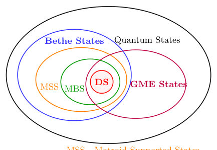
<figcaption class="paper-figure-caption"><b>Fig 1.</b> FIG. 2. The classification of quantum states discussed in this article. Their inclusion relationships are shown in the figure. By Corollary 3, Dicke states |Dk n⟩with k ̸= 0, n are gen- uinely entangled. As can be seen from Example 5, there exist matroid-base states that are not GME.</figcaption>
</figure>
<figure class="paper-figure-card">
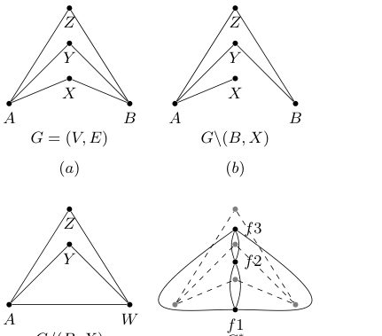
<figcaption class="paper-figure-caption"><b>Fig 2.</b> FIG. 3. (a) The graphic matroid M(G) corresponding to graph G is clearly connected; for any two distinct edges in G, a cycle contains them. (b) Deletion. The graph obtained by deleting edge (B, X), the corresponding graphic matroid is disconnected. (c) Contraction. The graph obtained by con- tracting edge (B, X), replacing vertices B and X with a new vertex W, and connecting the edges associated with B and X to W. The corresponding graphic matroid is connected. (d) Duality. The dual graph of G with vertices {f1, f2, f3} and edges set consisting of a pair of parallel edges between each pair of vertices. The dual matroid of M(G) is the the corresponding graphic matroid of G∗, i.e.,M(G)∗=...</figcaption>
</figure>
</div>

<p><strong>Summary.</strong> This paper establishes a deep structural link between the theory of quantum states and matroid combinatorics. It shows that key properties like genuine multipartite entanglement can be characterized purely by whether the state's underlying structure forms a connected matroid. This framework also introduces a notion of quantum state duality based on matroid duality.</p>
<p><strong>Why it may be interesting.</strong> It provides an entirely new mathematical lens (matroid theory) through which to understand fundamental concepts in quantum information like entanglement, potentially leading to new classification schemes or necessary conditions for quantum resource theories.</p>
<details>
<summary>Detailed structure</summary>
<p><strong>Main problem.</strong> The work establishes a structural correspondence between quantum states and matroid theory to characterize key properties of quantum states using purely combinatorial terms.</p>
<p><strong>Main result.</strong> A matroid-supported state is genuinely entangled if and only if its underlying matroid is connected, providing a powerful combinatorial criterion for entanglement.</p>
<p><strong>Method.</strong> The authors use algebraic representations (generating polynomials) and structural graph theory concepts (matroid minors/duality) to link quantum properties like entanglement to purely combinatorial properties of matroids.</p>
<p><strong>Model / system.</strong> The focus is on $n$-qubit quantum states, specifically those whose support structure corresponds exactly to the set of bases of a given matroid. The analysis involves concepts like genuine multipartite entanglement (GME) and local measurements in the Z-basis.</p>
<p><strong>Key observables.</strong> Genuine Multipartite Entanglement (GME), connectivity of the underlying matroid, and the resulting minor structure after local measurement.</p>
<p><strong>Important parameters / regimes.</strong> The number of qubits ($n$), the specific matroid $M$, and the coefficients $\alpha_S$ defining the state $|\psi
angle$.</p>
<p><strong>Assumptions / limitations.</strong> The analysis primarily focuses on states whose support is precisely defined by the bases of a matroid (matroid-supported states).</p>
<p><strong>Figures summary.</strong> Figure 1 links polynomial irreducibility, GME, and connected matroids. Figure 2 provides a classification diagram showing inclusion relationships among various types of quantum states related to matroids.</p>
<p><strong>Paper structure.</strong> The paper develops the correspondence by first defining matroid-supported states, then proving necessary and sufficient conditions for GME based on matroid connectivity, followed by analyzing measurement outcomes via matroid minors, and concluding with proposing a notion of quantum state duality inspired by matroid duality.</p>
</details>
<details>
<summary>Abstract</summary>
<p>In this work, we establish a structural correspondence between quantum states and matroid theory. This connection demonstrates that key properties of quantum states, including entanglement and measurement, can be characterized in purely combinatorial terms via matroids, despite the apparent conceptual distance between these two fields. Using this framework, we show that a matroid-supported state is genuinely entangled when its underlying matroid is connected. Moreover, a uniform superposition over all bases of a matroid is genuinely entangled if and only if the matroid is connected. We also demonstrate that a local measurement in the $Z$-basis on such a state yields another matroid-supported state, whose underlying matroid is a minor of the original one. Inspired by matroid duality, we further propose a notion of quantum state duality, uncovering a deep structural symmetry in state transformations.</p>
</details>
<p><sub><a href="#top">↑ back to top</a></sub></p>

<p><a id="paper-2607.16151"></a></p>
<h3 id="radiopurity-material-assays-and-radiation-exposure-projections-for-superconducting-qubit-measurements-at-snolab"><a href="http://arxiv.org/abs/2607.16151v1">Radiopurity material assays and radiation exposure projections for superconducting qubit measurements at SNOLAB</a></h3>
<p><strong>Authors:</strong> Y. Ahmed, B. Binoy, R. Bunker, D. Chauhan, P. Delsing, R. Germond, J. Hall, Z. Hong, A. Iqbal, V. Iyer, A. Klepikova, A. Kubik, S. P. Mantry, A. C. Masuskapoe, C. C. Monk, G. Peng, P. Qin, W. Rau, T. Reynolds, M. Stukel, C. M. Wilson, B. Zatschler, S. Zatschler, A. Zuniga<br>
<strong>Type:</strong> both · <strong>Category:</strong> quantum information and computing · <strong>PDF:</strong> <a href="https://arxiv.org/pdf/2607.16151v1">https://arxiv.org/pdf/2607.16151v1</a><br>
<strong>Analysis basis:</strong> full PDF text, analyzed in chunks
<strong>Topic relevance:</strong> 🔥 <code>QC/QI experiment</code> <strong>4/5</strong></p>
<div class="figure-strip-hint">↔ Scroll figures horizontally</div>
<div class="paper-figures-scroll">
<figure class="paper-figure-card">
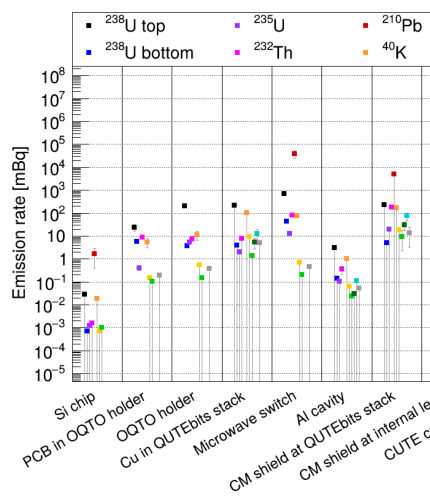
<figcaption class="paper-figure-caption"><b>Fig 1.</b> Figure 1: Emission rate of each component for each measured isotope or decay chain. The emission rate is calculated per piece, not taking into account the actual quantity of components to be used in the QUTEbits setup. A line extending from the marker to the bottom of the plot indicates an upper limit of the corresponding assay result at 90% C.L., while all other values are measurements with symmetric error bars, which appear asymmetric on logarithmic scale.</figcaption>
</figure>
<figure class="paper-figure-card">
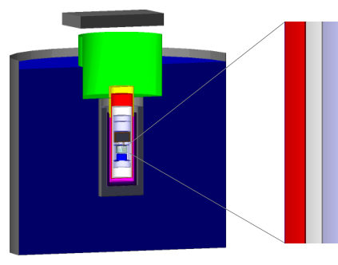
<figcaption class="paper-figure-caption"><b>Fig 2.</b> Figure 2: Visualization of the CUTE geometry in Geant4. Left: components from outside to inside include: PE block on top (gray), water tank (blue), stainless steel cans (green, yellow, gray), two layers of lead (lilac, dark purple), mu-metal magnetic shield (dark gray), OVC (pink) and cryogenic stages (50 K – red, 4 K – white, 1 K – light blue, 100 mK – mid blue, MC – blue). The internal lead shield (dark gray) is encased in copper (brown) and a CM shield (mint green). Right: above the QUTEbits stack, there are an additional MC plate (blue) and microwave switches (gray, brown). The QUTEbits stack is enclosed by a CM shield (mint green) and hosts Al cavities (light gray) mounted to the top....</figcaption>
</figure>
<figure class="paper-figure-card">

<figcaption class="paper-figure-caption"><b>Fig 3.</b> Figure 3: Simulated event rates in one of the Si chips according to the assay results and corre- sponding emission rates for various components. The Si chip itself, as well as components in direct line of sight, are the dominating backgrounds. A line extending from a marker to the bottom of the plot indicates a 90% C.L. upper limit.</figcaption>
</figure>
<figure class="paper-figure-card">
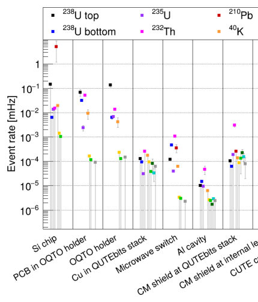
<figcaption class="paper-figure-caption"><b>Fig 4.</b> Figure 3 indicates that the dominating background contribution for the Si chip originates from the substrate itself as well as the PCB (see appendix B for a comparison of different PCBs) and the OQTO holder, i.e. the components which are in direct contact with it. While the BF-6 glue is also in direct contact with the Si chip, due to its radiopurity and tiny mass, its contribution is two orders of magnitude lower.</figcaption>
</figure>
<figure class="paper-figure-card">
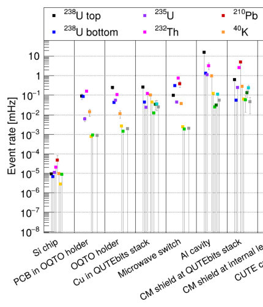
<figcaption class="paper-figure-caption"><b>Fig 5.</b> Figure 4: Simulated event rates in one of the Al cavities according to the assay results and corresponding emission rates for various components. The dominant background originates from the Al cavity itself and components which are in direct line of sight. A line extending from a marker to the bottom of the plot indicates a 90% C.L. upper limit.</figcaption>
</figure>
</div>

<p><strong>Summary.</strong> This paper assesses the radiation environment for superconducting qubits planned for underground testing at SNOLAB. It combines material assays to measure background radioactivity with detailed Monte Carlo simulations using Geant4. The goal is to quantify expected energy deposition rates and propose strategies, including crystal dynamics modeling, to mitigate environmental noise affecting quantum coherence.</p>
<p><strong>Why it may be interesting.</strong> This work is crucial for realizing fault-tolerant quantum computation outside of controlled lab environments, directly addressing environmental noise sources that limit qubit coherence times in solid-state quantum systems.</p>
<details>
<summary>Detailed structure</summary>
<p><strong>Main problem.</strong> Ionizing radiation from cosmic rays and natural radioactivity poses a significant threat to the reliable operation and coherence of superconducting qubits.</p>
<p><strong>Main result.</strong> The authors provide detailed estimates of expected background energy deposition rates by combining material assay measurements with advanced Monte Carlo simulations, guiding mitigation strategies for underground quantum computing facilities.</p>
<p><strong>Method.</strong> The study combines extensive radiochemical material assays (using HPGe detectors) to quantify contamination levels with sophisticated Geant4 Monte Carlo simulations, extended with G4CMP for crystal dynamics modeling.</p>
<p><strong>Model / system.</strong> The system under study is superconducting qubits fabricated on semiconductor substrates and operated in the deep underground SNOLAB facility. The analysis models interactions between high-energy particles (cosmic rays/radioactivity) and the qubit components (Si chips, Al films).</p>
<p><strong>Key observables.</strong> Energy deposit rates from radiogenic sources, spectral components of background radiation, phonon energy collection time, and Qubit hit multiplicity.</p>
<p><strong>Important parameters / regimes.</strong> Radioactivity levels ($ ext{mBq}/   ext{kg}$) for isotopes like $   ext{}^{238} ext{U}$ and $   ext{}^{210} ext{Pb}$, superconducting gap ($\Delta_{Al}$), and phonon mean free path ($\lambda(E_{ph})$).</p>
<p><strong>Assumptions / limitations.</strong> The background simulation adopts a conservative approach, assuming contamination is dominated by the measured radiopurity of silicon components. The G4CMP analysis relies on specific energy levels for primary calculations.</p>
<p><strong>Figures summary.</strong> Tables summarize assay results (radioactivity levels) and G4CMP parameters (phonon absorption/escape probabilities). Figures illustrate emission rate summaries and background contributions from various materials.</p>
<p><strong>Paper structure.</strong> The paper progresses by first detailing the material assaying program to quantify contamination, followed by a comprehensive Monte Carlo simulation workflow using Geant4. It then presents results analyzing expected background rates and concludes by applying crystal dynamics simulations (G4CMP) to suggest mitigation techniques.</p>
</details>
<details>
<summary>Abstract</summary>
<p>Interactions of cosmic rays and other forms of ionizing radiation pose a significant challenge to the reliable operation of state-of-the-art quantum devices and error correction in quantum computing based on superconducting circuits which are typically fabricated on semiconductor substrates. Shielded by 2 km of rock overburden, the Cryogenic Underground TEst facility (CUTE) at SNOLAB provides a unique ultra-low radiation environment to probe the performance of quantum technologies with a particular interest in quantum coherence studies. In this article, we present the findings of an extensive material assaying program in preparation for the first underground operation of superconducting qubits at SNOLAB. The radioactivity levels identified by the material assays enter a thorough Monte Carlo study based on the Geant4 particle physics tracking code. From these simulations, we estimate the rates of energy deposits from radiogenic sources expected for a quantum-device assembly operated in the CUTE facility. We further characterize the spectral components of the projected background and identify the dominant particle interaction types. Finally, we outline how crystal dynamics simulations using the G4CMP solid-state physics extension for Geant4 can inform the community-wide efforts to identify effective strategies to mitigate the effects of high-energy particle impacts.</p>
</details>
<p><sub><a href="#top">↑ back to top</a></sub></p>

<p><a id="paper-2607.15497"></a></p>
<h3 id="a-mesoscopic-ginzburg-landau-model-for-vibrational-strong-coupling-enhanced-rayleigh-scattering-in-molecular-liquids"><a href="http://arxiv.org/abs/2607.15497v1">A Mesoscopic Ginzburg--Landau Model for Vibrational Strong Coupling Enhanced Rayleigh Scattering in Molecular Liquids</a></h3>
<p><strong>Authors:</strong> Wenxiang Ying, Abraham Nitzan<br>
<strong>Type:</strong> theory · <strong>Category:</strong> statistical mechanics · <strong>PDF:</strong> <a href="https://arxiv.org/pdf/2607.15497v1">https://arxiv.org/pdf/2607.15497v1</a><br>
<strong>Analysis basis:</strong> full PDF text, analyzed in chunks
<strong>Topic relevance:</strong> <code>correlated cavity matter</code> <strong>3/5</strong> · <code>driven-dissipative phase transition</code> <strong>3/5</strong> · <code>analog quantum simulation</code> <strong>2/5</strong> · <code>correlated / nonlocal dissipation</code> <strong>2/5</strong> · <code>methods for driven-dissipative</code> <strong>2/5</strong> · <code>non-equilibrium dynamics</code> <strong>2/5</strong> · <code>non-equilibrium universality</code> <strong>2/5</strong> · <code>Keldysh / 2PI / non-Gaussian methods</code> <strong>1/5</strong> · <code>Tavis-Cummings &amp; cavity-many-emitter</code> <strong>1/5</strong> · <code>exotic spin models in light-matter</code> <strong>1/5</strong> · <code>interference shaping light</code> <strong>1/5</strong> · <code>spintronics-quantum-optics interface</code> <strong>1/5</strong></p>
<div class="figure-strip-hint">↔ Scroll figures horizontally</div>
<div class="paper-figures-scroll">
<figure class="paper-figure-card">
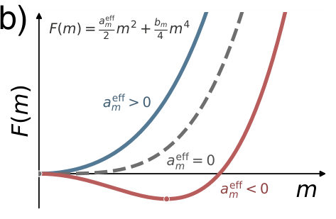
<figcaption class="paper-figure-caption"><b>Fig 1.</b> Figure 1: VSC-associated clustering as a mesoscopic Ginzburg–Landau instability. (a) Schematic comparison of a dispersed molec- ular ensemble outside the cavity and a clus- tered mesoscopic state formed inside a Fabry– P´erot cavity under VSC. (b) Schematic Lan- dau free-energy landscape for the structural or- der parameter m, written in terms of an ef- fective inverse susceptibility aeff m (Eq. 4) and F(m) = aeff m m2/2 + bmm4/4. In the normal liquid, aeff m &gt; 0 stabilizes the dispersed state at m = 0. The −g</figcaption>
</figure>
<figure class="paper-figure-card">
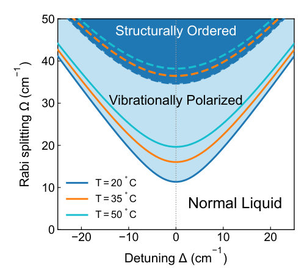
<figcaption class="paper-figure-caption"><b>Fig 2.</b> Figure 2: Phase diagram in the (∆, Ω) plane. The temperatures are T = 20, 35, 50 ◦C. Solid curves: primary vibrational GL boundary aP = 0. Dashed curves: struc- tural spinodal aeff m = 0, equivalently gP 2 = am (Eq. 4). Below the solid curve lies the normal liquid; between the solid and dashed curves lies the vibrationally polarized regime, where IR/polaritonic signatures are present but Rayleigh enhancement remains weak; beyond the dashed curve lies the structurally ordered regime where the Rayleigh enhancement be- comes strong. Raising temperature shifts both boundaries upward, shrinking the ordered win- dow.</figcaption>
</figure>
<figure class="paper-figure-card">
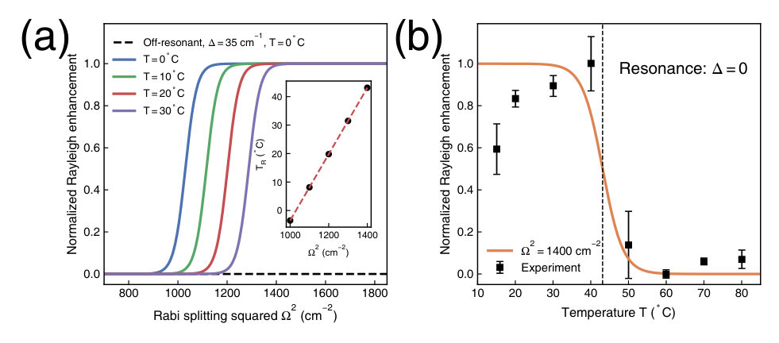
<figcaption class="paper-figure-caption"><b>Fig 3.</b> Figure 3: Collective coupling threshold and thermal collapse of the Rayleigh enhance- ment. The Rayleigh enhancement ratios are calculated from Eqs. 5-6 with intensities normalized. (a) Normalized Rayleigh enhancement vs Rabi splitting squared Ω2 at T = 0, 10, 20, 30 ◦C (on resonance, ∆= 0) and an off-resonance case at detuning ∆= 35 cm−1, T = 0 ◦C (dashed). The off-resonance threshold lies outside the plotted window, so the signal stays at background. In- set: Rayleigh collapse temperature TR, defined by aeff m (TR) = 0, vs Ω2 (circles) with linear fit (red dashed). (b) Normalized Rayleigh enhancement vs temperature at Ω2 = 1400 cm−2, ∆= 0. The sharp collapse near TR reflects the...</figcaption>
</figure>
<figure class="paper-figure-card">
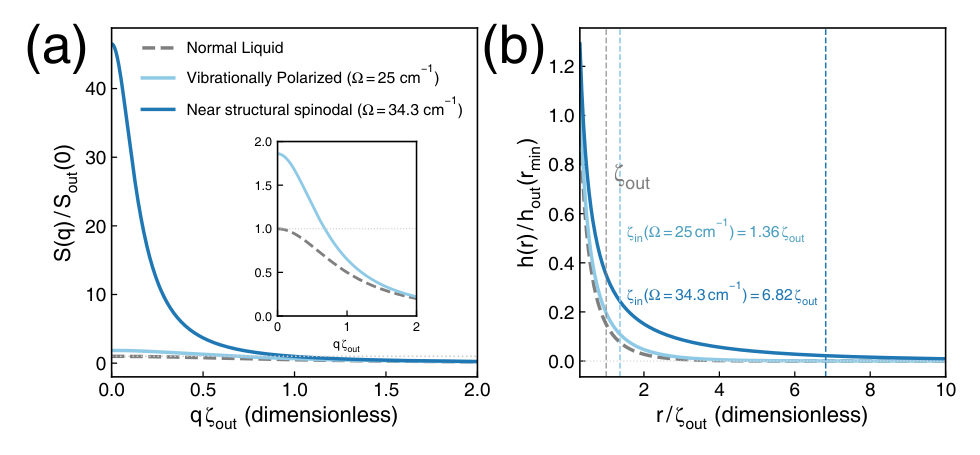
<figcaption class="paper-figure-caption"><b>Fig 4.</b> Figure 4: Implications of the GL model for the structure factor and the pair correlations. (a) OZ response S(q) = kBT/(aeff m + κq2) normalized to Sout(0), valid for aeff m &gt; 0. Gray dashed: outside cavity (aeff m = am = 1.0). Light blue: vibrationally polarized regime at Ω= 25 cm−1, ∆= 0, T = 20 ◦C, with weak low-q enhancement (S(0)/Sout(0) ≈1.86). Dark blue: stable-side representative approaching the structural spinodal at Ω≈34.3 cm−1, ∆= 0, T = 20 ◦C (aeff m = σa ≈ 0.0215, just above the spinodal). Low-q enhancement: S(0)/Sout(0) ≈46.5. Inset: low-q view of the outside-cavity and vibrationally polarized curves. (b) Real-space OZ tail h(r) ≡g(r)−1 ∝e−r/ζ/r, the inverse-Fourier counterpart...</figcaption>
</figure>
</div>

<p><strong>Summary.</strong> The paper develops a mesoscopic Ginzburg-Landau model to explain how Vibrational Strong Coupling drives collective phenomena like enhanced Rayleigh scattering in molecular liquids. It posits a two-step process: first, the cavity induces vibrational polarization ($P$), which then acts back onto the structural degrees of freedom ($m$) to trigger a secondary instability and observable enhancement. This provides testable predictions for X-ray/neutron scattering experiments.</p>
<p><strong>Why it may be interesting.</strong> This work bridges quantum optics (cavity QED/VSC) with condensed matter physics (structural phase transitions/scattering). The use of a GL framework to model the interplay between light-matter coupling and structural degrees of freedom is highly relevant to open quantum systems in complex media.</p>
<details>
<summary>Detailed structure</summary>
<p><strong>Main problem.</strong> To theoretically explain mesoscopic phenomena, such as resonantly enhanced Rayleigh scattering and abrupt concentration thresholds, observed in molecular liquids due to Vibrational Strong Coupling (VSC).</p>
<p><strong>Main result.</strong> The authors developed a two-step model showing that the structural instability required for strong Rayleigh enhancement occurs only after the vibrational polarization field $P$ has first established itself via VSC.</p>
<p><strong>Method.</strong> A mesoscopic Ginzburg-Landau (GL) model is constructed using two coupled order parameters: the collective vibrational polarization ($P$) and a secondary structural field ($m$).</p>
<p><strong>Model / system.</strong> The system models molecular liquids undergoing VSC, described by a free energy functional $F[m, P]$ coupling $P$ and $m$. The key mechanism is the renormalization of the structural susceptibility by the vibrational intensity ($a_{	ext{eff}, m} = a_m - g P^2$).</p>
<p><strong>Key observables.</strong> Resonantly enhanced Rayleigh scattering (probed via small-angle X-ray/neutron scattering), collective scaling relations, and slow structural dynamics.</p>
<p><strong>Important parameters / regimes.</strong> Temperature ($T$), detuning ($\Delta$), Rabi splitting ($\Omega$), and the coupling constant $g$. The model predicts two critical boundaries: $a_P=0$ (vibrational instability) and $a_{	ext{eff}}^m = 0$ (structural instability).</p>
<p><strong>Assumptions / limitations.</strong> The structural field $m(\mathbf{r})$ captures long-wavelength fluctuations, while the vibrational polarization $P$ is assumed to be spatially uniform ($
abla P \approx 0$). The GL functional itself is a phenomenological parametrization.</p>
<p><strong>Figures summary.</strong> Figure 1 schematically compares dispersed vs. clustered states using the Landau free-energy landscape $F(m)$ dependence on $a_{	ext{eff}, m}$. Figure 2 (mentioned in notes) likely shows the phase diagram mapping out the two critical boundaries ($a_P=0$ and $a_{	ext{eff}}^m = 0$) in the $(\Delta, \Omega)$ plane.</p>
<p><strong>Paper structure.</strong> The paper establishes the physical motivation from experiments, develops the coupled mesoscopic Ginzburg-Landau free energy functional, analyzes the two sequential instabilities ($P$ onset followed by $m$ ordering), and predicts measurable consequences for scattering and dynamics.</p>
</details>
<details>
<summary>Abstract</summary>
<p>Recent experiments by Sandeep \textit{et al.} [Angew. Chem. Int. Ed. 65, e16917 (2026)] suggest that vibrational strong coupling (VSC) in molecular liquids can generate mesoscopic phenomena beyond single-molecule observables, including resonantly enhanced Rayleigh scattering, abrupt concentration thresholds, and thermal collapse. Motivated by these observations, we construct a mesoscopic Ginzburg--Landau model with two coupled fields: a cavity-controlled collective vibrational polarization $P$ and a secondary structural field $m$ whose long-wavelength susceptibility is renormalized by the collective vibrational polarization intensity $P^2$, assumed to govern long-wavelength density/dielectric fluctuations. With calibrated parameters, the model captures the observed Rayleigh enhancement, collective scaling relations, and threshold-like behavior, while explaining why polaritonic/IR signatures may persist when Rayleigh scattering disappears. The model further predicts enhanced long-wavelength density/dielectric correlations, enlarged mesoscopic correlation lengths, and slowed structural dynamics in the regime with strong Rayleigh enhancement, providing direct experimental tests through small-angle X-ray/neutron scattering and dynamic light-scattering probes.</p>
</details>
<p><sub><a href="#top">↑ back to top</a></sub></p>

<p><a id="paper-2607.15551"></a></p>
<h3 id="probing-lorentz-invariance-violation-with-quantum-coherence-of-unruh-dewitt-detector"><a href="http://arxiv.org/abs/2607.15551v1">Probing Lorentz-invariance-violation with quantum coherence of Unruh-DeWitt detector</a></h3>
<p><strong>Authors:</strong> Yihao Wu, Xiaobao Liu, Zehua Tian<br>
<strong>Type:</strong> theory · <strong>Category:</strong> other · <strong>PDF:</strong> <a href="https://arxiv.org/pdf/2607.15551v1">https://arxiv.org/pdf/2607.15551v1</a><br>
<strong>Analysis basis:</strong> full PDF text, analyzed in chunks
<strong>Topic relevance:</strong> <code>correlated / nonlocal dissipation</code> <strong>3/5</strong> · <code>methods for driven-dissipative</code> <strong>3/5</strong> · <code>quantum measurements</code> <strong>3/5</strong> · <code>Keldysh / 2PI / non-Gaussian methods</code> <strong>2/5</strong> · <code>driven-dissipative phase transition</code> <strong>2/5</strong> · <code>non-equilibrium dynamics</code> <strong>2/5</strong> · <code>non-equilibrium universality</code> <strong>2/5</strong> · <code>Kondo &amp; dissipative impurity</code> <strong>1/5</strong> · <code>analog quantum simulation</code> <strong>1/5</strong> · <code>entanglement &amp; information structure</code> <strong>1/5</strong> · <code>measurement-induced transitions</code> <strong>1/5</strong></p>
<div class="figure-strip-hint">↔ Scroll figures horizontally</div>
<div class="paper-figures-scroll">
<figure class="paper-figure-card">
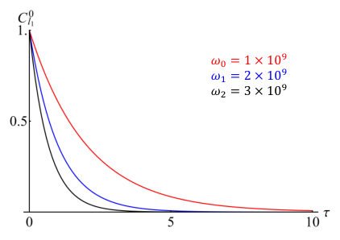
<figcaption class="paper-figure-caption"><b>Fig 1.</b> FIG. 1. Quantum coherence C0 l1 of the UDW detector cou- pled to the usual massless quantum field. Here, energy-level spacing ω0 = (109, 2×109, 3×109)Hz correspond to red, blue and black curves, respectively, the initial state θ = π/2 and the coupling strength µ = 10−3 have been taken.</figcaption>
</figure>
<figure class="paper-figure-card">
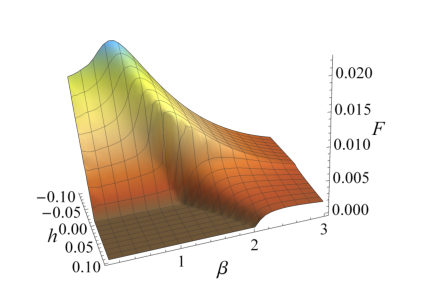
<figcaption class="paper-figure-caption"><b>Fig 2.</b> FIG. 2. Transition rates F PQ ± in the polymer quantized field theory as functions of detector’s rapidity β and energy-level spacing h. The positive and negative parts at h axis corre- spond to excitation and deexcitation rates, respectively.</figcaption>
</figure>
<figure class="paper-figure-card">
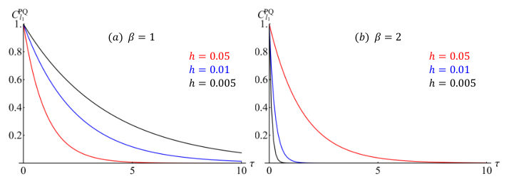
<figcaption class="paper-figure-caption"><b>Fig 3.</b> FIG. 3. Time evolution of quantum coherence CPQ l1 with different h for the rapidity β below (left) and above (right) the critical value βc cases. Here h = (0.05, 0.01, 0.005) corresponding to red, blue and black curve, respectively. Energy-level spacing ω0 = 109Hz, initial state θ = π/2 and coupling strength µ = 10−3 have been taken.</figcaption>
</figure>
<figure class="paper-figure-card">
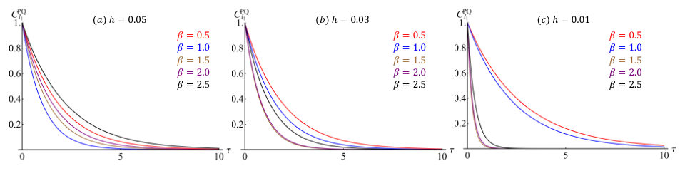
<figcaption class="paper-figure-caption"><b>Fig 4.</b> FIG. 4. Time evolution of quantum coherence CPQ l1 for several values of rapidity β with different h. Here β = (0.5, 1.0, 1.5, 2.0, 2.5) corresponding to red, blue, brown, purple and black curve, respectively. Energy-level spacing ω0 = 109Hz, initial state θ = π/2 and coupling strength µ = 10−3 have been taken.</figcaption>
</figure>
<figure class="paper-figure-card">
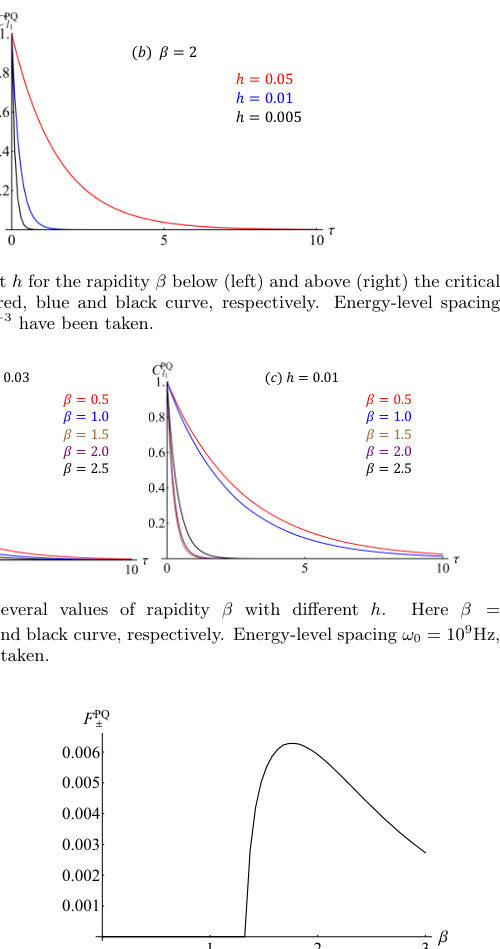
<figcaption class="paper-figure-caption"><b>Fig 5.</b> FIG. 6. The transition rates F PQ ± as a function of the detec- tor’s rapidity in the limit h →0.</figcaption>
</figure>
</div>

<p><strong>Summary.</strong> This theoretical paper proposes that measuring the quantum coherence decay of an Unruh-DeWitt detector can serve as a sensitive, low-energy probe for Lorentz Invariance Violation. By analyzing how this coherence depends on the detector's relativistic rapidity ($eta$), the authors predict a sharp transition point ($eta_c$) unique to LIV models like polymer quantization.</p>
<p><strong>Why it may be interesting.</strong> While focused on high-energy physics/QG, the use of open quantum system dynamics (Lindblad equation) and decoherence as a diagnostic tool is highly relevant to AMO physics for probing fundamental symmetries.</p>
<details>
<summary>Detailed structure</summary>
<p><strong>Main problem.</strong> The primary goal is to develop a low-energy, practical method to test for violations of Lorentz Invariance (LIV), which are typically probed at extremely high energy scales.</p>
<p><strong>Main result.</strong> The quantum coherence decay of an Unruh-DeWitt detector interacting with a field exhibits a strong dependence on the detector's rapidity ($eta$) when LIV is present, showing a sharp transition near $eta_c \approx 1.3675$.</p>
<p><strong>Method.</strong> The analysis involves calculating the time evolution of the detector's quantum coherence using master equations (Lindblad form) under weak coupling approximations.</p>
<p><strong>Model / system.</strong> The system consists of an inertial Unruh-DeWitt (UDW) detector coupled to a massless scalar field. The model incorporates Lorentz violation via modified dispersion relations, specifically examining polymer quantization inspired by loop quantum gravity.</p>
<p><strong>Key observables.</strong> Quantum coherence of the UDW detector, measured by its $l_1$ norm, and the transition rates ($\gamma_\pm$) derived from the field's Wightman function.</p>
<p><strong>Important parameters / regimes.</strong> The critical rapidity $eta_c \approx 1.3675$, the detector energy spacing ($\omega_0$), and the characteristic scale of LIV ($M_\star$).</p>
<p><strong>Assumptions / limitations.</strong> Weak coupling limit (Born/Markov approximations) is used, and the analysis compares results derived from standard QFT with those incorporating polymer quantization effects.</p>
<p><strong>Figures summary.</strong> Figures illustrate the time evolution of $l_1$ coherence versus rapidity ($eta$) for both Lorentz-invariant and polymer quantized cases, highlighting the sharp transition near $eta_c$.</p>
<p><strong>Paper structure.</strong> The paper establishes the theoretical framework by defining the UDW detector coupled to a field. It contrasts the rapidity-independent coherence decay in the standard (Lorentz-invariant) case with the rapidity-dependent behavior found when incorporating LIV, culminating in an application using polymer quantization.</p>
</details>
<details>
<summary>Abstract</summary>
<p>Testing Lorentz invariance violation (LIV) is notoriously difficult, as its characteristic energy scale, $M_\star$, in modified dispersion relations typically lies beyond current experimental reach. To enable a low-energy probe, we investigate the quantum coherence of an inertial Unruh-DeWitt (UDW) detector interacting with a massless scalar field with a Lorentz-violating dispersion relation $ω_{|\textbf{k}|}=|\textbf{k}|f(|\textbf{k}|/M_\star)$. Unlike the Lorentz-invariant case where quantum coherence is rapidity-independent, we find for the Lorentz-violating quantum field case the dynamics of detector's quantum coherence exhibits a strong dependence on its rapidity -- offering a potential low-energy signature of LIV. Applying this to the polymer-quantized scalar field theory inspired by loop quantum gravity, we show that the detector's quantum coherence exhibits a pronounced dependence on rapidity and undergoes a sharp transition near a critical rapidity $β_c \approx 1.3675$, a value within reach of existing facilities like the Relativistic Heavy Ion Collider. We also show how the detector's rapidity and its energy-level spacing enhance the response to the test of LIV. Our results establish quantum coherence as a sensitive and practical probe of LIV, providing a complementary avenue for testing quantum gravity-induced modifications to field theory.</p>
</details>
<p><sub><a href="#top">↑ back to top</a></sub></p>

<p><a id="paper-2607.15909"></a></p>
<h3 id="reconstruction-of-the-noise-correlation-spectral-density-from-the-cavity-emission-in-a-two-qubit-system"><a href="http://arxiv.org/abs/2607.15909v1">Reconstruction of the noise correlation spectral density from the cavity emission in a two-qubit system</a></h3>
<p><strong>Authors:</strong> Nadine Lenke, Guido Burkard<br>
<strong>Type:</strong> theory · <strong>Category:</strong> other · <strong>PDF:</strong> <a href="https://arxiv.org/pdf/2607.15909v1">https://arxiv.org/pdf/2607.15909v1</a><br>
<strong>Analysis basis:</strong> full PDF text, analyzed in chunks
<strong>Topic relevance:</strong> <code>Keldysh / 2PI / non-Gaussian methods</code> <strong>3/5</strong> · <code>correlated / nonlocal dissipation</code> <strong>3/5</strong> · <code>correlated cavity matter</code> <strong>3/5</strong> · <code>methods for driven-dissipative</code> <strong>3/5</strong> · <code>Tavis-Cummings &amp; cavity-many-emitter</code> <strong>2/5</strong> · <code>quantum measurements</code> <strong>2/5</strong> · <code>analog quantum simulation</code> <strong>1/5</strong> · <code>driven-dissipative phase transition</code> <strong>1/5</strong> · <code>exotic spin models in light-matter</code> <strong>1/5</strong> · <code>non-equilibrium dynamics</code> <strong>1/5</strong></p>
<div class="figure-strip-hint">↔ Scroll figures horizontally</div>
<div class="paper-figures-scroll">
<figure class="paper-figure-card">
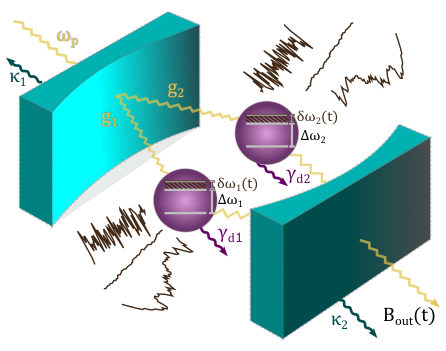
<figcaption class="paper-figure-caption"><b>Fig 1.</b> Figure 1. The system under consideration consists of a cavity (turquoise), here schematically represented by two mirrors, and two qubits (k = 1, 2; purple), each of which is coupled to the cavity mode of frequency ωc with transversal coup- ling strength gk. The qubits are arranged such that there is no direct correlation or coupling between them. We aim to detect indirect correlations between the qubits caused by cor- related noise (brown) through the emission from the cavity. The qubits undergo additional dephasing processes with rates γϕk and relaxation processes with rates γk. Both are captured in the total decoherence rate γdk = γk +2γϕk. The cavity loss rates at the two ports are...</figcaption>
</figure>
<figure class="paper-figure-card">
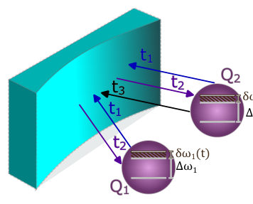
<figcaption class="paper-figure-caption"><b>Fig 2.</b> Figure 2. (a) Example illustrating consecutive third-order photon-exchange processes (∼g3 k) between the qubits and the cavity, consequently resulting in noise correlations in the output of the cavity. At time t1 a photon, which is affected by noise in Q1, is emitted from Q1 into the cavity and absorbed at time t2 by Q2. Finally, at time t3 a photon is emitted by Q2 into the cavity, accumulating the noise effects from both Q1 and Q2, such that the cavity output contains noise cross-correlations. (b) Example of consecutive fifth-order (∼ g5 k) photon-exchange processes between the qubits and the cavity. This leads to further noise correlations effects in the output of the cavity, which are...</figcaption>
</figure>
<figure class="paper-figure-card">
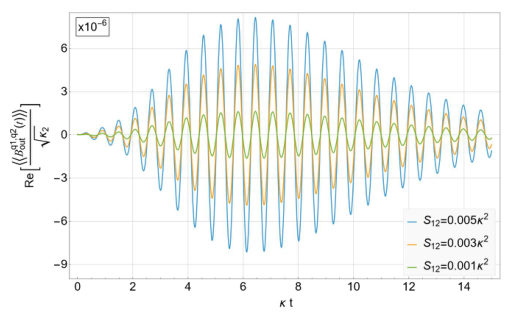
<figcaption class="paper-figure-caption"><b>Fig 3.</b> Figure 3. The effect of noise cross-correlations on the time- dependent cavity emission in the presence of quasi-static noise. We plot the contribution of the cavity emission containing the noise cross-correlations, ⟨⟨Bq1,q2 out (t)⟩⟩qs, from Eq. (33), in second order in λ. The parameters are cho- sen equally for both dots, as g/(2π) = 0.5 MHz, ⟨ˆσ−,0⟩= 0.5, ⟨ˆσz,0⟩ = 0, κ2 = κ 2 = 0.5 MHz, λ = 0.9, γd = 1 MHz, ∆/(2π) = −10 MHz, ∆c = 0. The condition Eq. (30) restricts the validity of the second-order approximation to times t ≲10/κ.</figcaption>
</figure>
<figure class="paper-figure-card">
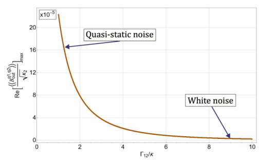
<figcaption class="paper-figure-caption"><b>Fig 4.</b> Figure 4. Dependence of the correlation decay rate on the maximum value of ⟨⟨Bq1,q2 out (t)⟩⟩OU. For low correlation de- cay rate values, the slope of this curve is approximately li- near, which resembles the situation of quasi-static noise. Con- versely, if Γ12 is high, the impact of noise correlation is dimi- nished, and the case of white noise is recovered. The pa- rameters are chosen fully symmetric between the two qubits, as g/(2π) = 0.5 MHz, ⟨ˆσ−,0⟩= 0.5, ⟨ˆσz,0⟩= 0, κ2 = κ 2 = 0.5 MHz, λ = 0.9, γd = 1 MHz, ∆/(2π) = −10 MHz, ∆c = 0.</figcaption>
</figure>
</div>

<p><strong>Summary.</strong> This paper develops a method to characterize correlated noise affecting two coupled qubits by analyzing the output field from a mediating cavity. By examining how the cross-correlation of the emitted light changes under different noise assumptions (white vs. quasi-static), the authors demonstrate that the spectral density of these correlations can be robustly extracted, providing vital diagnostic capability for quantum error correction research.</p>
<p><strong>Why it may be interesting.</strong> This work is highly relevant as it provides an advanced theoretical tool—using cavity emission spectroscopy—to diagnose subtle correlated noise effects in solid-state quantum hardware, which is crucial for scaling up quantum computation.</p>
<details>
<summary>Detailed structure</summary>
<p><strong>Main problem.</strong> The primary challenge addressed is characterizing correlated noise sources affecting qubits, which severely degrades performance in fault-tolerant quantum computation.</p>
<p><strong>Main result.</strong> The cavity emission signal allows for the reconstruction of the noise correlation spectral density $S_{12}(\omega)$ by analyzing cross-correlation terms. Furthermore, it shows that white noise effects are strongly suppressed compared to quasi-static noise.</p>
<p><strong>Method.</strong> The analysis uses quantum Langevin equations and averages over many noise realizations to relate measured cavity emission correlations to underlying noise spectral densities via the convolution theorem.</p>
<p><strong>Model / system.</strong> The system consists of two qubits coupled indirectly via a single electromagnetic cavity mode, subjected to longitudinal correlated noise affecting their energy splittings. The dynamics are modeled using a Lindblad master equation approach.</p>
<p><strong>Key observables.</strong> The primary observable is the cross-correlation function of the output cavity emission $\langle\langle B_{q1,q2}^{	ext{out}}(t)
angle
angle$, which serves as a diagnostic for noise correlations.</p>
<p><strong>Important parameters / regimes.</strong> Key parameters include the coupling constants ($g_k$), cavity decay rates ($\kappa$), and the scaling behavior of noise effects (e.g., fifth order for white noise vs. third order for quasi-static noise).</p>
<p><strong>Assumptions / limitations.</strong> The analysis assumes that direct qubit coupling is negligible, the qubits are subject to longitudinal noise, and the noise follows a multivariate Gaussian distribution.</p>
<p><strong>Figures summary.</strong> Figure 1 illustrates the physical setup involving two cavity-coupled qubits and correlated noise sources. The paper analyzes time-dependent correlation functions for different noise types (white, quasi-static, OU).</p>
<p><strong>Paper structure.</strong> The paper establishes the theoretical framework using a Hamiltonian and master equation, derives expressions for noise correlations based on specific noise models (White, Quasi-static, OU), and concludes with a general method utilizing the convolution theorem to extract $S_{12}(\omega)$ from measurements.</p>
</details>
<details>
<summary>Abstract</summary>
<p>A significant challenge in the field of large-scale fault-tolerant quantum computation is the influence of noise. In addition to the influence of noise on individual qubits, the smaller additional effect of noise correlations is also of high significance because correlated errors pose a challenge for quantum error correction. We describe the dynamics of two cavity-coupled qubits that are subject to correlated noise, assuming that the qubits are affected by longitudinal noise and not coupled directly. We find that the cavity emission enables the characterization of the noise correlations and describe the cases of white noise, quasi-static noise, and Ornstein-Uhlenbeck noise. For a known frequency spectrum, the reconstruction of the noise correlation spectral density from the cavity emission is possible by averaging over many different noise realizations. We demonstrate that, in the case of white noise, the noise correlation effects scale with the fifth order of the cavity-qubit coupling constant and are thus strongly suppressed compared with the case of quasi-static noise, where they scale with the third order. Furthermore, we present a method for extracting the noise correlation spectral density from the cavity emission in the case where the underlying noise type remains unidentified. This can be achieved by applying the convolution theorem.</p>
</details>
<p><sub><a href="#top">↑ back to top</a></sub></p>

<p><a id="paper-2607.15376"></a></p>
<h3 id="the-trinity-of-markovian-quantum-thermodynamics-unifying-the-axiomatic-microscopic-and-operational-paradigms"><a href="http://arxiv.org/abs/2607.15376v1">The Trinity of Markovian Quantum Thermodynamics: Unifying the Axiomatic, Microscopic, and Operational Paradigms</a></h3>
<p><strong>Authors:</strong> Yutong Luo, Jakub Czartowski, Felix Hubmann, Simon Milz, Felix C. Binder<br>
<strong>Type:</strong> theory · <strong>Category:</strong> statistical mechanics · <strong>PDF:</strong> <a href="https://arxiv.org/pdf/2607.15376v1">https://arxiv.org/pdf/2607.15376v1</a><br>
<strong>Analysis basis:</strong> full PDF text, analyzed in chunks
<strong>Topic relevance:</strong> <code>correlated / nonlocal dissipation</code> <strong>3/5</strong> · <code>driven-dissipative phase transition</code> <strong>3/5</strong> · <code>methods for driven-dissipative</code> <strong>3/5</strong> · <code>non-equilibrium dynamics</code> <strong>3/5</strong> · <code>Keldysh / 2PI / non-Gaussian methods</code> <strong>2/5</strong> · <code>non-equilibrium universality</code> <strong>2/5</strong> · <code>Kondo &amp; dissipative impurity</code> <strong>1/5</strong> · <code>analog quantum simulation</code> <strong>1/5</strong> · <code>entanglement &amp; information structure</code> <strong>1/5</strong> · <code>scars &amp; prethermalization</code> <strong>1/5</strong></p>
<div class="figure-strip-hint">↔ Scroll figures horizontally</div>
<div class="paper-figures-scroll">
<figure class="paper-figure-card">
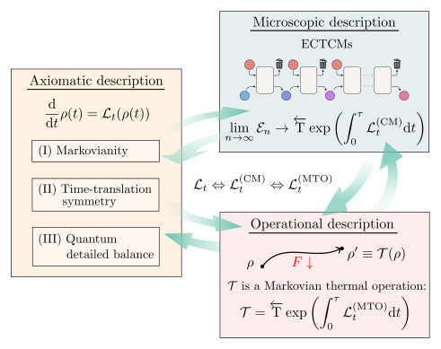
<figcaption class="paper-figure-caption"><b>Fig 1.</b> FIG. 1. Equivalence between three paradigms of Markovian quantum thermodynamics. The axiomatic description (left) characterises the dynamics through a GKSL master equation subject to three thermodynamic axioms: Markovianity, time- translation symmetry, and quantum detailed balance. The microscopic description (top right) realises such dynamics via energy-conserving thermal collision models (ECTCMs), where repeated interactions with thermal ancillae converge in the continuous-time limit to a time-ordered exponential gen- erated by L(CM) t . The operational description (bottom right) arises from the resource theory of athermality, where admis- sible dynamics are Markovian thermal operations...</figcaption>
</figure>
<figure class="paper-figure-card">
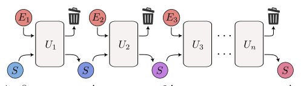
<figcaption class="paper-figure-caption"><b>Fig 2.</b> FIG. 2. Quantum collision models. The system S (blue discs) sequentially interacts with environmental ancillae (red discs) {Ei}n i=1 inside an interaction box representing the sys- tem–ancilla unitary Ui. After each collision occurring over a time interval ∆t the ancilla is discarded, resulting in memory- less dynamics, while the system gradually thermalises (tran- sitions from blue to red).</figcaption>
</figure>
<figure class="paper-figure-card">
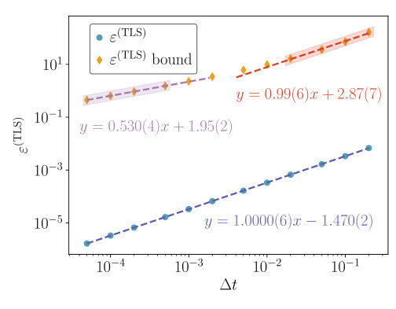
<figcaption class="paper-figure-caption"><b>Fig 3.</b> FIG. 3. Error scaling of the ECTCM simulation of the TLS model. The initial state is ρS(0) = |ψ⟩⟨ψ|S with |ψ⟩S = (|g⟩S + √</figcaption>
</figure>
<figure class="paper-figure-card">
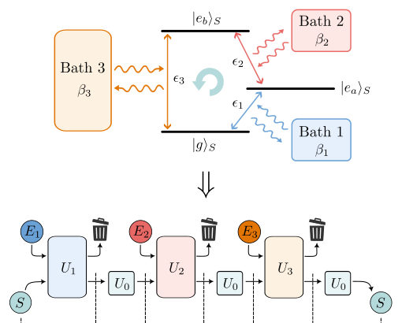
<figcaption class="paper-figure-caption"><b>Fig 4.</b> FIG. 4. Three-level autonomous thermal machine and its ECTCM realisation. Top: A three-level system with energy eigenstates |g⟩S, |ea⟩S, and |eb⟩S, where the three transitions with energy gaps ϵ1, ϵ2, and ϵ3 are each coupled to indepen- dent thermal baths at inverse temperatures β1, β2, and β3, respectively, with β1 ≥β3 ≥β2. In this regime, the machine can operate as a refrigerator, absorbing heat from both the cold and hot baths and dumping it into the bath at interme- diate temperature. Bottom: An energy-conserving thermal collision model (ECTCM) realisation of this thermal machine, in which the system sequentially interacts with three thermal ancillae prepared at the corresponding...</figcaption>
</figure>
<figure class="paper-figure-card">
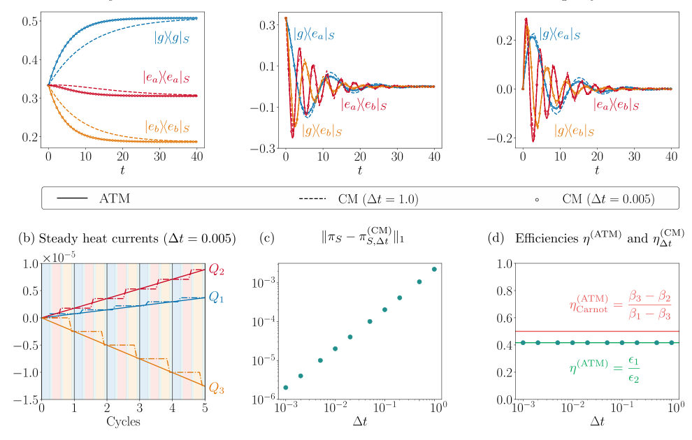
<figcaption class="paper-figure-caption"><b>Fig 5.</b> FIG. 5. Numerical comparison between the three-level autonomous thermal machine (ATM) and its ECTCM realisations (CM). Parameters: ϵ1 = 0.5, ϵ2 = 1.2, β1 = 1, β2 = 0.4, β3 = 0.6 and Γ = 0.05. (a) Population and coherence dynamics of the ATM (solid lines) and its ECTCM realisations with ∆t = 1.0 (dashed lines) and ∆t = 0.005 (circles). The initial state is ρS(0) = |ψ⟩⟨ψ|S where |ψ⟩S = (|g⟩S + |ea⟩S + |eb⟩S)/ √</figcaption>
</figure>
</div>

<p><strong>Summary.</strong> This paper unifies the theory of Markovian quantum thermodynamics by proving the exact equivalence between axiomatic constraints, underlying microscopic collision models, and operational resource theories. It establishes a universal framework for understanding how quantum systems thermalize while providing concrete simulation protocols for implementing these processes. This unification is vital for developing consistent theoretical tools in non-equilibrium quantum physics.</p>
<p><strong>Why it may be interesting.</strong> This work provides a crucial theoretical bridge for researchers working on open quantum systems, showing that different seemingly disparate approaches (axiomatic vs. microscopic) converge under specific thermodynamic conditions.</p>
<details>
<summary>Detailed structure</summary>
<p><strong>Main problem.</strong> The core problem is establishing a rigorous, unified understanding of Markovian quantum thermodynamics by reconciling three distinct theoretical frameworks: axiomatic constraints, microscopic collision models, and operational resource theories.</p>
<p><strong>Main result.</strong> The authors prove the exact equivalence between these three paradigms in the Markovian regime, providing a universal foundation for describing thermal processes.</p>
<p><strong>Method.</strong> The work uses mathematical proofs to establish pairwise equivalences between the generators derived from the axiomatic constraints (e.g., detailed balance), microscopic collision models (ECTCMs), and operational restrictions (MTOs).</p>
<p><strong>Model / system.</strong> The analysis concerns general quantum systems undergoing thermalization via interaction with a bosonic environment, described mathematically by the Lindblad master equation in the Markovian limit.</p>
<p><strong>Key observables.</strong> Free energy monotonicity ($F \downarrow$), energy conservation, and the structure of the time-dependent generator $L_t$.</p>
<p><strong>Important parameters / regimes.</strong> The analysis is restricted to the Markovian regime; finite-time simulation errors are controlled by a specific scaling law.</p>
<p><strong>Assumptions / limitations.</strong> The primary assumption is that the system dynamics can be accurately modeled within the memoryless, Markovian approximation.</p>
<p><strong>Figures summary.</strong> Figure 1 illustrates the central theme: the equivalence mapping between the Axiomatic description, the Microscopic (ECTCMs), and the Operational (MTOs) formulations of quantum thermodynamics.</p>
<p><strong>Paper structure.</strong> The paper develops the theory by first defining the three paradigms separately, then proving their mutual consistency via mathematical theorems, and finally demonstrating this universality through explicit simulation protocols applied to physical examples like qubit thermalization and autonomous machines.</p>
</details>
<details>
<summary>Abstract</summary>
<p>Thermodynamics imposes fundamental constraints on the evolution of quantum systems. These constraints and their dynamical consequences have been formulated within distinct paradigms, including axiomatic approaches based on quantum master equations, microscopic descriptions of open-system dynamics, and operational formulations rooted in resource theories. While each perspective has yielded important insights into thermodynamically consistent quantum dynamics, their precise relationship has remained unresolved. Here we establish the exact equivalence of these three paradigms in the Markovian regime. We prove that thermal Lindbladians satisfying Markovianity, time-translation symmetry, and quantum detailed balance are precisely those admitting a microscopic realisation as an energy-conserving thermal collision model and, equivalently, those generating Markovian thermal operations. This unifies the existing approaches to Markovian quantum thermodynamics and identifies its dynamical underpinnings. We further provide an explicit microscopic protocol for simulating thermal Markovian processes with controlled finite-time simulation errors. We illustrate its applicability by providing faithful thermal collision-model implementations of a qubit thermalising in a bosonic environment and of a three-level autonomous thermal machine. In the latter case, the protocol gives rise to a finite-stroke thermal engine that not only reproduces the continuous-time dynamics but also its steady-state thermodynamic performance. As a whole, these results establish a unified foundation for Markovian quantum thermodynamics, showing that its axiomatic, microscopic, and operational formulations are exactly equivalent and providing a universal protocol for implementing thermal processes and machines.</p>
</details>
<p><sub><a href="#top">↑ back to top</a></sub></p>

<p><a id="paper-2607.15458"></a></p>
<h3 id="data-efficient-reconstruction-of-critical-quantum-dynamics-via-blind-fractional-envelope-extrapolation"><a href="http://arxiv.org/abs/2607.15458v1">Data-efficient reconstruction of critical quantum dynamics via blind fractional-envelope extrapolation</a></h3>
<p><strong>Authors:</strong> Hyunju Kim, Hyun-Yong Lee, Heung-Sik Kim<br>
<strong>Type:</strong> theory · <strong>Category:</strong> strongly correlated electrons · <strong>PDF:</strong> <a href="https://arxiv.org/pdf/2607.15458v1">https://arxiv.org/pdf/2607.15458v1</a><br>
<strong>Analysis basis:</strong> full PDF text, analyzed in chunks
<strong>Topic relevance:</strong> <code>methods for driven-dissipative</code> <strong>3/5</strong> · <code>non-equilibrium dynamics</code> <strong>3/5</strong> · <code>analog quantum simulation</code> <strong>2/5</strong> · <code>non-equilibrium universality</code> <strong>2/5</strong> · <code>Keldysh / 2PI / non-Gaussian methods</code> <strong>1/5</strong> · <code>correlated / nonlocal dissipation</code> <strong>1/5</strong> · <code>driven-dissipative phase transition</code> <strong>1/5</strong> · <code>entanglement &amp; information structure</code> <strong>1/5</strong></p>
<div class="figure-strip-hint">↔ Scroll figures horizontally</div>
<div class="paper-figures-scroll">
<figure class="paper-figure-card">

<figcaption class="paper-figure-caption"><b>Fig 1.</b> FIG. 1. Analytic structure underlying the method, in the complex-frequency (s) plane. In both panels the true critical branch cut (zigzag line) runs along the negative real axis and terminates at the branch point s = 0 (open circle). (a) A finite-pole estimator must represent the dynamics with discrete poles (×); to mimic the cut it tiles the negative real axis, under-resolving the ω →0 edge and missing the asymptotic t−α tail. (b) The fractional closure writes the inverse propagator as sα + ˜Σeff(s): the cut is carried analytically by sα, so that the propagator behaves as sα−1 near the branch point; the pole continuum shown (offset for clarity), with power-law weight growing toward the...</figcaption>
</figure>
<figure class="paper-figure-card">

<figcaption class="paper-figure-caption"><b>Fig 2.</b> FIG. 2. An example comparison between the fSD and ESPRIT on the XXZ chain at ∆= 0 (and h = 0). (a) |C(t)| from TEBD (gray), with the fSD (blue solid, blind α∗) and finite-pole ESPRIT (orange dashed) extrapolations fitted on the short window t ∈[3, 10] (shaded, identical settings and pole count M = 4 for both); beyond the window the finite-pole fit departs from the data, while fSD tracks the algebraic tail (out- of-window error 0.07 vs. 0.54). The green dash-dotted curve shows ESPRIT at its best-case pole count (M = 7, chosen with knowledge of the exact tail, App. A): the error improves to 0.19 but remains 2.7× that of fSD. (b) Blind exponent selection: median walk-forward validation error...</figcaption>
</figure>
<figure class="paper-figure-card">

<figcaption class="paper-figure-caption"><b>Fig 3.</b> FIG. 3. Data efficiency under a fully symmetric, blind procedure. Out-of-window extrapolation error versus fit-window cutoff tD for the XXZ critical line at ∆= 0 (a), 0.5 (b), and 1 (c), comparing fSD (blue; residual fit with auto-selected pole count, α identified blind from the fit window alone) with three finite-pole baselines on the same data and the same grid: plain ESPRIT (orange, shared auto-M), the Erpenbeck- style extrapolator of Ref. [13] run with its authors’ prescriptions (L = 0.4N, mode number from their singular-value threshold 10−6, growing modes discarded, Vandermonde amplitudes; green), and a time-domain LP extension in the spirit of Ref. [14] (purple, shared auto-M). Lines...</figcaption>
</figure>
<figure class="paper-figure-card">

<figcaption class="paper-figure-caption"><b>Fig 4.</b> FIG. 4. Blind identification of the critical exponent. Blind esti- mates of α along the XXZ critical line compared with the closed- form Luttinger value (gray, not used in the identification). Two in- dependent blind estimators — envelope power-law fit (blue, with jackknife/regression error bars) and residual-minimization (red, with window-systematic bars) — bracket the closed form across ∆∈ [−0.5, 0.75] (shaded). At ∆= 1 both estimators undershoot, re- flecting the known bias from the multiplicative logarithmic correc- tion t−1(ln t)1/2 (see text).</figcaption>
</figure>
<figure class="paper-figure-card">

<figcaption class="paper-figure-caption"><b>Fig 5.</b> FIG. 5. Magnetic-field scan at ∆= 1 under the same fully blind procedure as Fig. 3. (a) Real-time comparison at the saturation field h = 2.0: |C(t)| from TEBD (gray) and the deviations |Re Cpred −Re C| — evaluated on the real part, matching the error metric of Eq. (A1) — of fSD (blue, blind α∗= 0.48) and of the Erpenbeck-style baseline (green), both fitted on t ∈[3, 12] (shaded). The small in-window fSD residual reflects its conservative auto-M pole budget (M = 4 vs. 6 retained by the baseline’s 10−6 threshold); the baseline interpolates the window three orders of magnitude more closely yet extrapolates an order of magnitude worse — the interpolation-versus-extrapolation contrast of Fig. 2....</figcaption>
</figure>
</div>

<p><strong>Summary.</strong> This work introduces a novel fractional envelope extrapolation method (fSD) designed to overcome the limitations of simulating quantum dynamics at criticality. By treating the low-energy spectrum as a branch cut rather than discrete poles, the technique accurately reconstructs long-time decay tails from short simulation data. This is particularly valuable for studying strongly correlated electron models and critical phenomena.</p>
<p><strong>Why it may be interesting.</strong> It provides a powerful, data-driven tool to extract long-time dynamical information from short numerical simulations in strongly correlated systems where standard spectral analysis fails due to power-law continua.</p>
<details>
<summary>Detailed structure</summary>
<p><strong>Main problem.</strong> Simulating real-time dynamics of quantum systems is limited by entanglement growth, especially at criticality where the spectrum exhibits a power-law continuum.</p>
<p><strong>Main result.</strong> A fractional-calculus-motivated envelope extrapolation method (fSD) accurately reconstructs short-time critical dynamics, significantly outperforming standard finite-pole methods.</p>
<p><strong>Method.</strong> The technique involves blind selection of the critical exponent $\alpha$, detrending the signal by $t^\alpha$, fitting the residual with a stable finite-pole model, and then restoring the algebraic envelope.</p>
<p><strong>Model / system.</strong> The method is tested on quantum systems exhibiting criticality, including the XXZ spin chain and the single-orbital Hubbard model studied via Dynamical Mean-Field Theory (DMFT).</p>
<p><strong>Key observables.</strong> Real-time correlation functions $G(t)$, spectral function $A(\omega)$, and the critical exponent $\alpha$.</p>
<p><strong>Important parameters / regimes.</strong> The critical exponent $\alpha$, system parameters like magnetic field ($h$) or interaction ratios ($U/D$), and time windows for fitting.</p>
<p><strong>Assumptions / limitations.</strong> The method assumes that the low-energy physics is dominated by a power-law continuum $t^{-\alpha}$ at criticality, allowing the use of fractional calculus techniques.</p>
<p><strong>Figures summary.</strong> Figures compare fSD extrapolation against finite-pole methods on critical chains (XXZ), showing superior agreement with theoretical tails; other figures track exponent $\alpha$ across varying fields or show spectral function resolution in DMFT transitions.</p>
<p><strong>Paper structure.</strong> The paper establishes the failure of standard pole fitting at criticality, introduces the fSD framework based on fractional calculus, details the operational procedure (blind search), and validates it by comparing results against known critical points and non-critical regimes.</p>
</details>
<details>
<summary>Abstract</summary>
<p>Simulating real-time dynamics of quantum systems is often limited to short times by entanglement growth. Finite-pole reconstructions such as linear prediction and related machineries extrapolate such data reliably when the spectrum is a finite set of excitations, but at criticality the low-energy spectrum is a power-law continuum $A(ω)\sim|ω|^{α-1}$ -- a branch cut whose real-time tail $G(t)\sim t^{-α}$ finitely many poles cannot represent. Here we develop a fractional-calculus-motivated envelope extrapolation for such data. Its structure is motivated by a fractional form of Schwinger--Dyson (fSD) equation, in which the Laplace symbol $s^α$ carries the branch cut analytically while the residual self-energy remains meromorphic. On real data we employ the corresponding operational alternative -- the exponent $α$ is selected blindly inside the fit window, the signal is detrended by $t^α$, the residual is fitted by a stabilized finite-pole model, and the algebraic envelope is restored. On the critical XXZ chain this blind fractional-envelope method (fSD for short) extrapolates short-time data typically several-fold more accurately than finite-pole methods, with the exponent $α$ identified blindly from the fit window alone and bracketing the closed-form Luttinger value at weak coupling. The same blind search finds the $z=2$ dilute-magnon exponent $α=1/2$ at the $Δ=1$ saturation transition, and the advantage persists in the gapped free-magnon phase with its sharp band edges. On noncritical dynamical mean-field spectra, whose low-frequency response is regular, fSD by contrast fails to select any stable fractional envelope and reduces to the standard pole result rather than manufacturing a spurious power law, making it an efficient and accurate route to quantum critical dynamics when only short simulation times are accessible.</p>
</details>
<p><sub><a href="#top">↑ back to top</a></sub></p>

<p><a id="paper-2607.15950"></a></p>
<h3 id="conditional-euclidean-hamiltonian-reductions-for-sign-problem-toy-models"><a href="http://arxiv.org/abs/2607.15950v1">Conditional Euclidean-Hamiltonian reductions for sign-problem toy models</a></h3>
<p><strong>Authors:</strong> Tsogtgerel Gantumur<br>
<strong>Type:</strong> theory · <strong>Category:</strong> strongly correlated electrons · <strong>PDF:</strong> <a href="https://arxiv.org/pdf/2607.15950v1">https://arxiv.org/pdf/2607.15950v1</a><br>
<strong>Analysis basis:</strong> full PDF text, analyzed in chunks
<strong>Topic relevance:</strong> <code>Keldysh / 2PI / non-Gaussian methods</code> <strong>3/5</strong> · <code>methods for driven-dissipative</code> <strong>3/5</strong> · <code>analog quantum simulation</code> <strong>2/5</strong> · <code>driven-dissipative phase transition</code> <strong>2/5</strong> · <code>Kondo &amp; dissipative impurity</code> <strong>1/5</strong> · <code>non-equilibrium dynamics</code> <strong>1/5</strong> · <code>quantum measurements</code> <strong>1/5</strong></p>
<div class="figure-strip-hint">↔ Scroll figures horizontally</div>
<div class="paper-figures-scroll">
<figure class="paper-figure-card">

<figcaption class="paper-figure-caption"><b>Fig 1.</b> Figure 1. Low-energy errors versus R per channel.</figcaption>
</figure>
<figure class="paper-figure-card">

<figcaption class="paper-figure-caption"><b>Fig 2.</b> Figure 2. Stochastic GEVP energies versus sample count.</figcaption>
</figure>
<figure class="paper-figure-card">

<figcaption class="paper-figure-caption"><b>Fig 3.</b> Figure 3. Hubbard active-space diagnostics.</figcaption>
</figure>
</div>

<p><strong>Summary.</strong> This paper introduces Conditional Euclidean-Hamiltonian (CEH) reduction to circumvent the sign problem plaguing Monte Carlo simulations of finite-density quantum systems. Instead of calculating problematic scalar weights, CEH keeps the residual physics as an operator, projecting it onto a manageable, low-rank effective Hamiltonian. This offers a structured alternative for simulating strongly correlated models where standard methods fail due to complex phases.</p>
<p><strong>Why it may be interesting.</strong> It provides a rigorous theoretical framework for handling sign problems in lattice simulations by shifting the computational bottleneck from complex weights to controlled matrix approximations, which is relevant for simulating strongly correlated materials.</p>
<details>
<summary>Detailed structure</summary>
<p><strong>Main problem.</strong> The primary challenge is overcoming the sign problem encountered when using Euclidean Monte Carlo methods for finite-density fermion systems, which leads to complex or sign-changing path integral weights.</p>
<p><strong>Main result.</strong> The Conditional Euclidean-Hamiltonian (CEH) reduction offers a viable alternative by replacing scalar sign reweighting with a monitored active-space approximation in structured, finite models.</p>
<p><strong>Method.</strong> CEH combines aspects of Euclidean Monte Carlo and Hamiltonian formulations by keeping the residual active degrees of freedom operator-valued rather than tracing them into a determinant or scalar weight.</p>
<p><strong>Model / system.</strong> The method is applied to quantum many-body systems, specifically addressing finite-density effects ($\mu 
eq 0$) in lattice field theories, with benchmarks including the Hubbard ring model.</p>
<p><strong>Key observables.</strong> Projected correlation matrices, effective Hamiltonians (H_eff), and diagnostics such as basis enlargement metrics and number-sector leakage.</p>
<p><strong>Important parameters / regimes.</strong> Finite chemical potential ($\mu$), temperature ($eta$), and the rank ($R$) of the projected active space.</p>
<p><strong>Assumptions / limitations.</strong> The method assumes that the residual active dynamics are low-rank approximable, allowing for a controlled projection onto a finite basis set.</p>
<p><strong>Figures summary.</strong> Not specified (Notes describe diagnostics like sign values ($  ext{sgn}$) and convergence of projected thermal density ($
ho_R$) across different active space ranks $R$).</p>
<p><strong>Paper structure.</strong> The paper introduces the CEH concept as a trade-off against scalar reweighting, details its mathematical construction using operator projection onto correlation matrices, and validates it through three finite benchmarks (oscillator, stochastic calculation, Hubbard ring).</p>
</details>
<details>
<summary>Abstract</summary>
<p>Euclidean Monte Carlo methods are effective when the path-integral weight is real and nonnegative, but finite-density fermion systems often produce sign-changing or complex scalar weights after the fermionic sector is traced out. Hamiltonian formulations avoid this complex-weight sampling problem but face rapid Hilbert-space growth. This paper studies a conditional Euclidean-Hamiltonian (CEH) reduction that combines these two descriptions.   The calculation is organized around a Monte Carlo-tractable reference problem and a residual active sector. Instead of tracing the active sector into a determinant or scalar weight, CEH keeps it operator-valued and uses the reference calculation to determine projected correlation or transfer matrices. These matrices define a finite effective Hamiltonian, with the remaining finite-density dependence introduced after projection. At finite rank, the result is an effective model whose accuracy must be tested through basis enlargement, metric conditioning, stochastic matrix-element errors, and number-sector diagnostics.   The construction is examined in three finite benchmarks. A two-channel oscillator tests conditional basis compression; a positive-measure stochastic calculation tests correlation-matrix harvesting and GEVP extraction, including a comparison with a PDMS-style estimator; and a four-site Hubbard ring combines a finite-budget determinant-sign stress test with finite-density continuation in non-target active spaces. The benchmarks support the proposed trade from scalar sign reweighting to a monitored active-space approximation in structured finite models, but they do not provide an end-to-end stochastic CEH treatment of the Hubbard sign problem or establish favorable scaling. Usefulness requires both low-rank approximability and efficient extraction of the required projected matrix data.</p>
</details>
<p><sub><a href="#top">↑ back to top</a></sub></p>

<p><a id="paper-2607.15405"></a></p>
<h3 id="boosting-state-discrimination-in-quantum-brownian-motion-channel-via-memory-induced-coherence-preservation"><a href="http://arxiv.org/abs/2607.15405v1">Boosting State Discrimination in Quantum Brownian Motion Channel via Memory-Induced Coherence Preservation</a></h3>
<p><strong>Authors:</strong> João C. P. Porto, Pedro R. Dieguez, Carlos H. S. Vieira, Irismar G. da Paz, Giandomenico Palumbo, Lucas S. Marinho<br>
<strong>Type:</strong> theory · <strong>Category:</strong> quantum information and computing · <strong>PDF:</strong> <a href="https://arxiv.org/pdf/2607.15405v1">https://arxiv.org/pdf/2607.15405v1</a><br>
<strong>Analysis basis:</strong> full PDF text, analyzed in chunks
<strong>Topic relevance:</strong> <code>methods for driven-dissipative</code> <strong>3/5</strong> · <code>non-equilibrium dynamics</code> <strong>2/5</strong> · <code>quantum measurements</code> <strong>2/5</strong> · <code>Keldysh / 2PI / non-Gaussian methods</code> <strong>1/5</strong> · <code>correlated / nonlocal dissipation</code> <strong>1/5</strong> · <code>driven-dissipative phase transition</code> <strong>1/5</strong> · <code>entanglement &amp; information structure</code> <strong>1/5</strong> · <code>non-equilibrium universality</code> <strong>1/5</strong></p>
<div class="figure-strip-hint">↔ Scroll figures horizontally</div>
<div class="paper-figures-scroll">
<figure class="paper-figure-card">

<figcaption class="paper-figure-caption"><b>Fig 1.</b> Fig. 1. Sketch of a quantum state discrimination protocol. First, Alice prepares a bosonic probe, P (with frequency ω0 and initial temperature TP ), and applies squeezing along ei- ther the position quadratures (a) or momentum quadratures (b) in phase-space. For example, these distinct preparations can encode logical bits 0 and 1, respectively. She then sends these states through a non-Markovian bath at temperature TB, modeled by a Quantum Brownian Motion (QBM) channel comprising an ensemble of harmonic oscillators with frequen- cies ωn. Finally, at the receiving end, Bob performs measure- ments to discriminate between these states and, by doing so, decode the logical information for...</figcaption>
</figure>
<figure class="paper-figure-card">

<figcaption class="paper-figure-caption"><b>Fig 2.</b> Fig. 2. Dynamics of the relative entropy of coherence across non-Markovian (x = 0.15, top block) and Markovian (x = 5.0, bottom block) regimes for a fixed bath temper- ature (TB = 1000) and zero displacement (α = 0). We contrast initial probe temperatures TP = 0 [(a,b,e,f)] and TP = 1000 [(c,d,g,h)], alongside position (ϕ = 0) and momen- tum (ϕ = π/2) squeezing. Initial squeezing amplitudes are r = 0.5 (red), 1.0 (solid black), 1.5 (blue), with the vacuum case (r = 0) as a dashed black line.</figcaption>
</figure>
<figure class="paper-figure-card">

<figcaption class="paper-figure-caption"><b>Fig 3.</b> Fig. 3. Dynamics of the non-thermal excitation witness Θ across non-Markovian (x = 0.15, panels a-d) and Marko- vian (x = 5.0, panels e-h) regimes for a fixed bath tem- perature (TB = 1000) and zero displacement (α = 0). We contrast initial probe temperatures TP = 0 [(a,b,e,f)] and TP = 1000 [(c,d,g,h)], alongside position (ϕ = 0) and momen- tum (ϕ = π/2) squeezing. Initial squeezing amplitudes are r = 0.5 (red), 1.0 (solid black), 1.5 (blue), with the vacuum case (r = 0) as a dashed black line.</figcaption>
</figure>
<figure class="paper-figure-card">

<figcaption class="paper-figure-caption"><b>Fig 4.</b> Fig. 4. Dynamics of the entropy production rate across non- Markovian (x = 0.15, panels a-d) and Markovian (x = 5.0, panels e-h) regimes for a fixed bath temperature (TB = 1000) and zero displacement (α = 0). We contrast initial probe temperatures TP = 0 [(a,b,e,f)] and TP = 1000 [(c,d,g,h)], alongside position (ϕ = 0) and momentum (ϕ = π/2) squeez- ing. Initial squeezing amplitudes are r = 0.5 (red), 1.0 (solid black), 1.5 (blue), with the vacuum case (r = 0) as a dashed black line.</figcaption>
</figure>
<figure class="paper-figure-card">

<figcaption class="paper-figure-caption"><b>Fig 5.</b> Fig. 6. Error probabilities for discriminating between orthog- onal squeezing directions (ϕ = 0 versus ϕ = π/2) in variance- encoded Gaussian states across non-Markovian (x = 0.15, panels a,b) and Markovian (x = 5.0, panels c,d) regimes for a fixed bath temperature (TB = 1000) and zero displacement (α = 0). We contrast initial probe temperatures TP = 0 (left panels) and TP = 1000 (right panels). The standard classi- cal limit (r = 0) is marked by a solid black line at 0.5. For high squeezing (r = 1.5), the fundamental uncertainty win- dow bounded by Helstrom limits (p±) is shaded blue, with the solid blue line denoting the exact error probability via optimal position-quadrature homodyne...</figcaption>
</figure>
</div>

<p><strong>Summary.</strong> This paper investigates state discrimination in the presence of environmental noise using the Quantum Brownian Motion model. It demonstrates that contrary to intuition, increasing initial thermal noise can actually boost performance by preserving coherence through non-Markovian dynamics when squeezing is applied. The findings suggest a robust physical architecture for quantum communication even in high-temperature settings.</p>
<p><strong>Why it may be interesting.</strong> This work is highly relevant as it provides a concrete physical mechanism—exploiting transient non-thermalization dynamics—to enhance quantum information processing capabilities (state discrimination) in realistic, noisy environments, moving beyond simple loss models.</p>
<details>
<summary>Detailed structure</summary>
<p><strong>Main problem.</strong> The study addresses how quantum state discrimination can be improved when transmitting quantum states through noisy, dissipative environments like a Quantum Brownian Motion (QBM) channel.</p>
<p><strong>Main result.</strong> Counterintuitively, the research shows that increasing initial thermal noise, when combined with squeezing in a QBM channel, can enhance state discrimination by inducing coherence preservation mechanisms. The achievable performance approaches the theoretical Helstrom limit using quadrature homodyne detection.</p>
<p><strong>Method.</strong> The analysis employs quantum information metrics like Bures distance and fidelity to quantify distinguishability, alongside developing specific error probability formulas for continuous-variable Gaussian states measured via homodyne detection.</p>
<p><strong>Model / system.</strong> The system models single-mode Gaussian probes interacting with a bosonic environment characterized by the QBM channel. The evolution is governed by master equations analyzed across non-Markovian and Markovian regimes.</p>
<p><strong>Key observables.</strong> Error probability for state discrimination, Quantum Coherence (quantified via relative entropy or coherence witness $\Theta$), Bures Distance ($D_B$).</p>
<p><strong>Important parameters / regimes.</strong> Initial probe temperature ($T_P$) vs bath temperature ($T_B$), squeezing amplitudes ($r$), and the non-Markovianity parameter ($x = \omega_c/\omega_0$).</p>
<p><strong>Assumptions / limitations.</strong> The analysis often assumes weak coupling, utilizes Gaussian state representations, and sometimes restricts calculations to zero-displacement states or equal prior probabilities for discrimination.</p>
<p><strong>Figures summary.</strong> Figures illustrate the dynamics of coherence measures (relative entropy) under varying thermal/memory conditions, and one figure details the optimal decision boundaries ($\pm q_c$) for homodyne detection using squeezed states.</p>
<p><strong>Paper structure.</strong> The paper builds from establishing the theoretical framework for state evolution in QBM channels to quantifying coherence resources. It then applies these tools to show how noise can be leveraged for improved discrimination, culminating in specific measurement protocols and error bounds.</p>
</details>
<details>
<summary>Abstract</summary>
<p>Preserving quantum resources in dissipative environments is a fundamental challenge in quantum information processing. While environmental interactions usually degrade quantum resources, we theoretically show that in a Quantum Brownian Motion (QBM) channel, continuous-variable state discrimination can be improved by increasing, rather than minimizing, the initial thermal noise. Specifically, without suppressing the inherent environmental dissipation, when combined with squeezing, this initial noise induces a coherence preservation mechanism driven by the transient non-thermalization of the probe with the bath. This preservation translates into a pronounced reduction in error probabilities for state discrimination between orthogonal squeezing directions. Furthermore, we also show that quadrature homodyne detection achieves near-optimal performance, approaching the Helstrom limit. These results highlight the advantage of exploiting thermal-squeezed states, offering a robust physical architecture for quantum communication in high-temperature environments.</p>
</details>
<p><sub><a href="#top">↑ back to top</a></sub></p>

<p><a id="paper-2607.16099"></a></p>
<h3 id="symmetry-extension-by-condensation-defects-ii-general-dimensions-and-higher-groups"><a href="http://arxiv.org/abs/2607.16099v1">Symmetry extension by condensation defects II: general dimensions and higher-groups</a></h3>
<p><strong>Authors:</strong> Matteo Bertolini, Lorenzo Di Pietro, Stefano C. Lanza, Antonio Santaniello<br>
<strong>Type:</strong> theory · <strong>Category:</strong> other · <strong>PDF:</strong> <a href="https://arxiv.org/pdf/2607.16099v1">https://arxiv.org/pdf/2607.16099v1</a><br>
<strong>Analysis basis:</strong> full PDF text, analyzed in chunks
<strong>Topic relevance:</strong> <code>Keldysh / 2PI / non-Gaussian methods</code> <strong>3/5</strong> · <code>analog quantum simulation</code> <strong>2/5</strong> · <code>correlated / nonlocal dissipation</code> <strong>1/5</strong> · <code>correlated cavity matter</code> <strong>1/5</strong> · <code>driven-dissipative phase transition</code> <strong>1/5</strong> · <code>entanglement &amp; information structure</code> <strong>1/5</strong> · <code>methods for driven-dissipative</code> <strong>1/5</strong> · <code>non-equilibrium dynamics</code> <strong>1/5</strong> · <code>non-equilibrium universality</code> <strong>1/5</strong></p>
<div class="figure-strip-hint">↔ Scroll figures horizontally</div>
<div class="paper-figures-scroll">
<figure class="paper-figure-card">

<figcaption class="paper-figure-caption"><b>Fig 1.</b> Figure 1: The red line denotes the insertion of a codimension-1 defect of the C(0) symmetry. We show explicitly the expressions of the partition functions on the two sides of the defect, to point out the insertion of the operator Ud on the right half-space.</figcaption>
</figure>
<figure class="paper-figure-card">

<figcaption class="paper-figure-caption"><b>Fig 2.</b> Figure 3: Illustration of a junction between topological defects that reflects the existence of a (r + 2)-group structure. The yellow planes are the topological defects associated with C(r). When we fuse three of them we generate a fourth C(r) defect and a defect for D(r+1) (represented as a blue line) which is fixed by d = Φr [tr+3] (c1, c2, c3).</figcaption>
</figure>
<figure class="paper-figure-card">

<figcaption class="paper-figure-caption"><b>Fig 3.</b> Figure 4: Two-component linking action of Uba[Σp+1] on Oα[γd−p−2].</figcaption>
</figure>
<figure class="paper-figure-card">

<figcaption class="paper-figure-caption"><b>Fig 4.</b> Figure 5: The configuration of charged operators Oα[γd−p−2], Oβ[γd−q−2] and topological defect Ud[Σp+q+2] that activates the triple linking (2.44). This implies that Ud[Σp+q+2] measures a charge, as in equation (2.43).</figcaption>
</figure>
<figure class="paper-figure-card">

<figcaption class="paper-figure-caption"><b>Fig 5.</b> Figure 6: As we slide the condensation defect Ud[Σp+q+2] through the operator Oα[γd−p−2], a charge Ubb[eΣp+q+3 ∩γd−p−2] is deposited, where bb = (−1)p(d+1)d · (φα ⊗Z −).</figcaption>
</figure>
</div>

<p><strong>Summary.</strong> This work develops a general framework for determining how symmetry structures are modified when gauging symmetries in QFTs characterized by a cubic mixed 't Hooft anomaly. It shows that the resulting theory features an extended symmetry, which can be classified as either a simple group extension or a more complex higher-group structure. This is achieved by analyzing the behavior of condensation defects associated with dual symmetries.</p>
<p><strong>Why it may be interesting.</strong> While highly theoretical, the concept of emergent higher-group symmetries and topological defects is relevant to understanding complex many-body ground states or effective theories derived from condensed matter systems with strong topological order.</p>
<details>
<summary>Detailed structure</summary>
<p><strong>Main problem.</strong> The paper investigates novel symmetry structures that emerge in Quantum Field Theories (QFTs) when gauging symmetries associated with a cubic mixed 't Hooft anomaly.</p>
<p><strong>Main result.</strong> The resulting symmetry structure is an extension of the original symmetry $C(r)$ by a $\mathbb{Z}_{D(n+r-1)}$ group, which can manifest as either a standard group extension or a higher-group structure depending on the specific parameters.</p>
<p><strong>Method.</strong> The analysis uses anomaly inflow formulas and examines how gauging symmetries affects the topological defects and fusion rules of the resulting dual theory.</p>
<p><strong>Model / system.</strong> The study is general, starting with a $d$-dimensional QFT possessing three interacting Abelian discrete symmetries ($A(p)$, $B(q)$, and $C(r)$) characterized by a cubic mixed anomaly. Examples include QED3 and $\mathcal{N}=4$ supersymmetric QED3.</p>
<p><strong>Key observables.</strong> The nature of the symmetry extension (standard vs. higher-group), the resulting discrete group structure ($\mathbb{Z}_{D(n+r-1)}$), and the fusion rules of topological operators.</p>
<p><strong>Important parameters / regimes.</strong> The dimensions $d$, the charges/indices $(p, q, r)$, and the anomaly coefficients defining the cubic term are crucial parameters.</p>
<p><strong>Assumptions / limitations.</strong> The analysis fundamentally relies on the existence and structure of a cubic mixed 't Hooft anomaly in the theory under consideration.</p>
<p><strong>Paper structure.</strong> The paper proceeds by establishing the general framework using the anomaly inflow formula, analyzing the consequences of gauging $A 	imes B$, deriving constraints on background fields from partition function invariance, and finally classifying the resulting symmetry extension based on the defect structure.</p>
</details>
<details>
<summary>Abstract</summary>
<p>We discuss a class of symmetry structures in general spacetime dimension that arise when gauging symmetries in theories with a cubic 't Hooft anomaly. The anomaly mixes two Abelian discrete symmetries $A$ and $B$ with a characteristic class for an additional symmetry $C$, and we gauge $A\times B$. The novelty of this construction is that the resulting symmetry structure involves certain condensation defects of the dual symmetry $\widehat{A}\times\widehat{B}$. Specifically, these defects generate an invertible symmetry that extends $C$, either as an ordinary group extension or as a higher-group, depending on the characteristic class. We describe the corresponding charged operators and states, and illustrate the mechanism in several examples.</p>
</details>
<p><sub><a href="#top">↑ back to top</a></sub></p>

<p><a id="paper-2607.15351"></a></p>
<h3 id="the-paradox-of-the-third-particle-is-classical"><a href="http://arxiv.org/abs/2607.15351v1">The Paradox of the Third Particle is classical</a></h3>
<p><strong>Authors:</strong> Ladina Hausmann, Renato Renner<br>
<strong>Type:</strong> theory · <strong>Category:</strong> other · <strong>PDF:</strong> <a href="https://arxiv.org/pdf/2607.15351v1">https://arxiv.org/pdf/2607.15351v1</a><br>
<strong>Analysis basis:</strong> full PDF text, analyzed in chunks
<strong>Topic relevance:</strong> <code>entanglement &amp; information structure</code> <strong>3/5</strong> · <code>quantum measurements</code> <strong>3/5</strong> · <code>measurement-induced transitions</code> <strong>2/5</strong> · <code>correlated / nonlocal dissipation</code> <strong>1/5</strong> · <code>driven-dissipative phase transition</code> <strong>1/5</strong> · <code>methods for driven-dissipative</code> <strong>1/5</strong> · <code>non-equilibrium dynamics</code> <strong>1/5</strong></p>
<div class="figure-strip-hint">↔ Scroll figures horizontally</div>
<div class="paper-figures-scroll">
<figure class="paper-figure-card">

<figcaption class="paper-figure-caption"><b>Fig 1.</b> Figure 1: Quantum Paradox of the Third Particle. From the perspective of one particle (dotted), the state of other particles (solid) depends on the value m of a bit. From A’s perspective, the state of particle B is the same independently of whether the third particle C is ignored, as in (a), or included in the description, as in (b). The paradox arises because, after transforming to B’s perspective (vertical arrow), the state of A is different depending on whether C is considered. This difference is operationally relevant: in (a), the value m is retrievable by acting on A only, whereas this is not the case in (b).</figcaption>
</figure>
<figure class="paper-figure-card">

<figcaption class="paper-figure-caption"><b>Fig 2.</b> Figure 3: Geometric intuition. The upper part shows the perspective from particle A (dotted) on particles B and C (solid). The lower part shows the perspective from particle B (dotted) on particles A and C (solid). The reference frame transformation ¯T A→B from A’s perspective to B’s perspective corresponds to a shift of the origin from the location of A to the location of B.</figcaption>
</figure>
<figure class="paper-figure-card">

<figcaption class="paper-figure-caption"><b>Fig 3.</b> Figure 4: The classical Paradox of the Third Particle. From A’s perspective, B’s state depends on the value m of the bit M, regardless of whether the third particle C is ignored, as in (a), or included, as in (b). However, upon transforming to B’s perspective, a discrepancy arises: the state of A depends on m if C is ignored when transforming, as on the right-hand side of (a), whereas it is independent of m if C is accounted for, as in (c).</figcaption>
</figure>
<figure class="paper-figure-card">

<figcaption class="paper-figure-caption"><b>Fig 4.</b> Figure 6: Heisenberg cuts. Originally, the notion of a Heisenberg cut was introduced in quantum theory as the boundary between the world described by quantum theory and the rest. Here, we use this notion more generally: the boundary between the systems described from a perspective and the rest. Figure (a) shows the case relevant to the Paradox of the Third Particle, and Figure (b) the standard situation.</figcaption>
</figure>
</div>

<p><strong>Summary.</strong> This theoretical paper analyzes the 'Paradox of the Third Particle' by extending its analysis from quantum mechanics into classical mechanics. The authors prove a no-go theorem demonstrating that any consistent physical theory describing subsystems relative to different reference frames must violate at least one fundamental principle (like information preservation or relationality). This suggests deep constraints on how we can mathematically partition and describe reality across multiple perspectives.</p>
<p><strong>Why it may be interesting.</strong> This work tackles fundamental issues regarding the structure of physical reality and measurement theory, which underpins how we model quantum systems relative to observers/reference frames. It challenges foundational assumptions about locality and separability in physics.</p>
<details>
<summary>Detailed structure</summary>
<p><strong>Main problem.</strong> The paper investigates whether the 'Paradox of the Third Particle,' typically discussed in quantum mechanics regarding reference frames, persists when considering classical systems.</p>
<p><strong>Main result.</strong> A no-go theorem is established showing that if one demands information-preserving frame transformations for physical subsystems (classical or quantum), it is impossible to meaningfully partition the world into independent subsystems from every perspective.</p>
<p><strong>Method.</strong> The authors analyze both quantum and classical analogues of reference frame transformations, using joint probability distributions (classical) or density operators/unitary transformations (quantum). They establish consistency conditions based on three postulates: Geometry, Position/momentum separation, and Information preservation.</p>
<p><strong>Model / system.</strong> The system involves three particles (A, B, C) whose states are described by phase space coordinates (classically) or quantum states. The analysis focuses on how the description of one particle depends on a reference frame defined by another.</p>
<p><strong>Key observables.</strong> Information retrieval success probability ($P_{succ}$), joint probability distributions $P(A)_{BM}$, and the consistency of state descriptions across different perspectives (the 'atlas of perspectives').</p>
<p><strong>Important parameters / regimes.</strong> The number of particles (three is central), the nature of the reference frame transformation ($ar{T}_{A	o B}$), and the assumption of information preservation.</p>
<p><strong>Assumptions / limitations.</strong> The analysis assumes that reference frames are physical systems, leading to postulates defining the transformations, most critically the requirement that these transformations must be information-preserving (symplectomorphisms classically, unitaries quantum mechanically).</p>
<p><strong>Figures summary.</strong> Figures illustrate the paradox using state dependence on a third particle and show geometric intuition for frame transformations in both quantum and classical settings.</p>
<p><strong>Paper structure.</strong> The paper first establishes the paradox in the quantum setting, then extends the analysis to a fully classical framework. It develops a no-go theorem by showing that maintaining information preservation forces a violation of either relationality or decomposability when comparing different perspectives.</p>
</details>
<details>
<summary>Abstract</summary>
<p>The Paradox of the Third Particle arises when particles are described relative to one of them serving as a reference frame. Although it is typically attributed to quantum superpositions, we show that the paradox and its ramifications$\unicode{x2014}$such as the relativity of subsystems$\unicode{x2014}$already occur classically. In light of this insight, we establish a no-go theorem that holds whenever physical subsystems, whether classical or quantum, are used as reference frames: if one demands that frame transformations be information-preserving, then it is impossible to meaningfully partition the world into subsystems, like individual particles, from the perspective of each frame.</p>
</details>
<p><sub><a href="#top">↑ back to top</a></sub></p>

<p><a id="paper-2607.15915"></a></p>
<h3 id="optimization-of-multistate-stirap-by-pulse-shaping"><a href="http://arxiv.org/abs/2607.15915v1">Optimization of multistate STIRAP by pulse shaping</a></h3>
<p><strong>Authors:</strong> Julian K. Dimitrov, Nikolay V. Vitanov<br>
<strong>Type:</strong> theory · <strong>Category:</strong> other · <strong>PDF:</strong> <a href="https://arxiv.org/pdf/2607.15915v1">https://arxiv.org/pdf/2607.15915v1</a><br>
<strong>Analysis basis:</strong> full PDF text, analyzed in chunks
<strong>Topic relevance:</strong> <code>analog quantum simulation</code> <strong>3/5</strong> · <code>methods for driven-dissipative</code> <strong>2/5</strong> · <code>non-equilibrium dynamics</code> <strong>2/5</strong> · <code>Keldysh / 2PI / non-Gaussian methods</code> <strong>1/5</strong> · <code>correlated / nonlocal dissipation</code> <strong>1/5</strong> · <code>driven-dissipative phase transition</code> <strong>1/5</strong> · <code>interference shaping light</code> <strong>1/5</strong></p>
<div class="figure-strip-hint">↔ Scroll figures horizontally</div>
<div class="paper-figures-scroll">
<figure class="paper-figure-card">

<figcaption class="paper-figure-caption"><b>Fig 1.</b> Figure 1. Three-state Λ configuration for STIRAP on two- photon resonance. The pump field Ωp(τ) couples the initial state |1⟩to the intermediate state |2⟩, while the Stokes field Ωs(τ) couples state |2⟩to the target state |3⟩. The interme- diate state has the single-photon detuning ∆(τ).</figcaption>
</figure>
<figure class="paper-figure-card">

<figcaption class="paper-figure-caption"><b>Fig 2.</b> Figure 2. Normalized pump and Stokes pulse shapes for the systems considered in this paper. Each individual pulse has area π for Ω0 = 1. The three-state fields are defined by Eqs. (11) and (12), while the multistate fields follow Eq. (23), with linkage-dependent parallelizing functions derived begin- ning in Sec. III C and in Appendix A.</figcaption>
</figure>
<figure class="paper-figure-card">

<figcaption class="paper-figure-caption"><b>Fig 3.</b> Figure 3. Resonant adiabatic eigenenergies corresponding to the pulse shapes in Fig. 2. The systems differ only through the Clebsch-Gordan coefficients listed in Table I, and each individual pulse has area π for Ω0 = 1. The Je = Jg linkages retain a larger central dark-bright gap than the corresponding Je = Jg −1 linkages, consistent with Table II and the transfer results in Fig. 4.</figcaption>
</figure>
<figure class="paper-figure-card">

<figcaption class="paper-figure-caption"><b>Fig 4.</b> Figure 4. Population-transfer error 1−PN as a function of the temporal pulse area for the resonant Gaussian and parallel- STIRAP pulses. The optimized pulses produce lower errors for all chain lengths, while the Je = Jg linkages generally outperform the corresponding Je = Jg −1 linkages because of their larger dark-bright gaps. The labels G and P denote Gaussian and parallel-STIRAP pulses, respectively.</figcaption>
</figure>
<figure class="paper-figure-card">

<figcaption class="paper-figure-caption"><b>Fig 5.</b> Figure 5. Two-dimensional maps of the population-transfer error 1 −PN as functions of the temporal pulse area and the constant single-photon detuning ∆0/π for the Je = Jg family. All systems are on multiphoton resonance δ = 0. The left col- umn shows the Gaussian fields of Eq. (13), while the right col- umn shows the resonantly optimized parallel-STIRAP fields evaluated at the indicated detuning. The optimized pulses retain broader low-error regions, although the pulse area re- quired for high-fidelity transfer increases with the number of states.</figcaption>
</figure>
</div>

<p><strong>Summary.</strong> This paper introduces a sophisticated pulse-shaping technique to enhance population transfer fidelity in complex multistate STIRAP systems. By tailoring the driving laser fields based on keeping system eigenenergies parallel to the dark state, the authors achieve error reductions of several orders of magnitude over standard pulses. This method proves highly effective for controlling quantum transitions in atomic ensembles and remains robust even when accounting for environmental decoherence.</p>
<p><strong>Why it may be interesting.</strong> This work directly addresses high-fidelity quantum control in open quantum systems by optimizing external driving fields. The extension of adiabatic passage techniques to complex, multi-level atomic structures is highly relevant for quantum memory and quantum simulation using trapped atoms or superconducting circuits.</p>
<details>
<summary>Detailed structure</summary>
<p><strong>Main problem.</strong> The primary goal is improving population transfer efficiency in multistate Stimulated Raman Adiabatic Passage (STIRAP) protocols.</p>
<p><strong>Main result.</strong> Optimized pulse shaping can reduce the population transfer error by several orders of magnitude compared to standard Gaussian pulses, and this improvement remains robust against parameter variations and spontaneous emission.</p>
<p><strong>Method.</strong> The authors propose a novel pulse-shaping method extending the quasiparallel-eigenenergy approach. This involves analytically designing pump and Stokes field shapes to keep relevant eigenenergies nearly parallel to the dark state during critical interaction periods.</p>
<p><strong>Model / system.</strong> The system models multistate STIRAP chains, specifically using magnetic sublevels of degenerate angular momenta ($J_g 	o J_e$). The dynamics are governed by time-dependent Hamiltonian evolution under coupling from right- and left-circularly polarized pulses.</p>
<p><strong>Key observables.</strong> Population transfer error (fidelity), instantaneous eigenenergies ($\eta$), and the dark-bright energy gap separation.</p>
<p><strong>Important parameters / regimes.</strong> Pulse shapes, Rabi frequencies ($\Omega_p, \Omega_s$), single-photon detuning ($\Delta$), multiphoton detuning ($\delta$), and the number of states in the chain (odd numbers $N=2n+1$).</p>
<p><strong>Assumptions / limitations.</strong> The method is restricted to odd-numbered state chains because these generically possess a zero-eigenvalue dark state. The approach avoids introducing auxiliary shortcut fields.</p>
<p><strong>Figures summary.</strong> Figures illustrate the three-state $\Lambda$ configuration, show optimized pulse shapes for various multi-state systems, and present 2D maps comparing population transfer error versus parameter variations (e.g., Gaussian vs. optimized pulses).</p>
<p><strong>Paper structure.</strong> The paper builds from the basic three-state STIRAP model to generalize the concept of quasiparallel eigenenergies to arbitrary odd-numbered state chains, deriving analytic pulse prescriptions and validating them through extensive numerical simulations.</p>
</details>
<details>
<summary>Abstract</summary>
<p>We propose a pulse-shaping method for improving population transfer in multistate stimulated Raman adiabatic passage (STIRAP) with nearest-neighbour couplings only. The method extends the quasiparallel-eigenenergy approach, previously used for two- and three-state systems, to multistate chains without introducing additional shortcut fields. The pump and Stokes fields are shaped so that the eigenenergies closest to the dark state remain nearly parallel to it during the central part of the interaction, where nonadiabatic transitions are most likely to occur. We derive analytic prescriptions for the required pulse shapes and apply them to five-, seven-, and nine-state chains formed by magnetic sublevels of degenerate manifolds with angular momenta $J_g\rightarrow J_e=J_g$ and $J_g\rightarrow J_e=J_g-1$ driven by a pair of right- and left-circularly polarized pulses. Numerical simulations show that the optimized pulses can reduce the population transfer error by several orders of magnitude compared to standard Gaussian pulses. The same shapes also improve robustness against variations of the peak Rabi frequency, the single-photon detuning, and the multiphoton detuning. The comparison between the two angular-momentum families shows that the $J_g\rightarrow J_g$ chains are generally more favourable, because their Clebsch-Gordan coefficients keep the relevant bright-state gap larger in the region where the dark state changes most rapidly. Finally, simulations with spontaneous emission show that the optimized resonant pulses remain advantageous in the lossy regime as well.</p>
</details>
<p><sub><a href="#top">↑ back to top</a></sub></p>

<p><a id="paper-2607.15784"></a></p>
<h3 id="scaling-regimes-of-the-kuramoto-sivashinsky-equation-from-the-functional-renormalization-group"><a href="http://arxiv.org/abs/2607.15784v1">Scaling regimes of the Kuramoto-Sivashinsky equation from the functional renormalization group</a></h3>
<p><strong>Authors:</strong> Liubov Gosteva, Nicolás Wschebor, Léonie Canet<br>
<strong>Type:</strong> theory · <strong>Category:</strong> statistical mechanics · <strong>PDF:</strong> <a href="https://arxiv.org/pdf/2607.15784v1">https://arxiv.org/pdf/2607.15784v1</a><br>
<strong>Analysis basis:</strong> full PDF text, analyzed in chunks
<strong>Topic relevance:</strong> <code>non-equilibrium universality</code> <strong>3/5</strong> · <code>driven-dissipative phase transition</code> <strong>2/5</strong> · <code>non-equilibrium dynamics</code> <strong>2/5</strong> · <code>Frenkel-Kontorova</code> <strong>1/5</strong> · <code>Keldysh / 2PI / non-Gaussian methods</code> <strong>1/5</strong> · <code>correlated / nonlocal dissipation</code> <strong>1/5</strong> · <code>methods for driven-dissipative</code> <strong>1/5</strong></p>
<div class="figure-strip-hint">↔ Scroll figures horizontally</div>
<div class="paper-figures-scroll">
<figure class="paper-figure-card">

<figcaption class="paper-figure-caption"><b>Fig 1.</b> FIG. 1. Fixed points of the 1D KPZ equation, with gKPZ = λ2D/ν3.</figcaption>
</figure>
<figure class="paper-figure-card">

<figcaption class="paper-figure-caption"><b>Fig 2.</b> FIG. 2. Flow of the parameters (a) ˜Dκ, ˜νκ and ηD κ , (b) ˜ζκ and ˜τκ defined in Eqs. (30), (43) as functions of the RG time s = ln(κ/Λ) calculated within the simple DE approximation. The flow starts from the KS initial condition, and reaches in the IR the KPZ fixed point, with emergent time-reversal symmetry and KPZ scaling exponents.</figcaption>
</figure>
<figure class="paper-figure-card">

<figcaption class="paper-figure-caption"><b>Fig 3.</b> FIG. 3. NLO flow of the functions (a) ˆf D κ and (b) ˆf ν κ (in the flow-A before the continuation). The dashed black line marks the initial condition, darker violet indicate later RG times (larger length scales), the green dash-dotted line highlights the scale at which the effective viscosity just crosses zero, the blue lines with symbols mark the fixed point functions, which are compared in (c).</figcaption>
</figure>
<figure class="paper-figure-card">

<figcaption class="paper-figure-caption"><b>Fig 4.</b> FIG. 4. (a): Correlation function C(ω, p)/C(0, p) in the (ω, p) plane obtained within the flow-A NLO approximation, calculated for ˆgΛ = 1 (λ = DΛ = −νΛ = 1). The red, blue, and green lines show linear fit of the contour lines. The fits yield a slope z in the range z ∈[1.32, 1.44] for the red lines (onset of the KPZ regime), in the range z ∈[1.94, 2.14] for the blue lines (EW regime), and in the range z ∈[1.01, 1.15] for the green lines (IB regime). (Inset): Fit of the frequency dependence of correlation function at p = 2.07 (black) close to the scale when νκ = 0 with the Fourier representations of the asymptotic prediction (62) (cyan and green). (b): Effective noise ˜Dκ ≡κη∗Dκ and...</figcaption>
</figure>
<figure class="paper-figure-card">

<figcaption class="paper-figure-caption"><b>Fig 5.</b> FIG. 5. (a): Length scale at which the KPZ regime is attained, as a function of the noise amplitude ˆDΛ. Crosses represent the scale when the effective coupling parameter ˆgκ reaches 95% of its KPZ fixed point value, circles represent the same for ηD κ . (b): Length scale at which the effective viscosity vanishes as a function of the noise amplitude. For both panels, colored symbols show p0-DE results with regulator (60) and parameters Cν = 0.25, α = 6, β = 0.5 (green), Cν = 0.25, α = 6, β = 1 (orange), Cν = 0.5, α = 6, β = 1 (violet), while black symbols show LO results (Cν = 1, α = 8, β = 0.5). The dashed lines indicate a linear fit.</figcaption>
</figure>
</div>

<p><strong>Summary.</strong> This work rigorously re-examines the scaling behavior of the stochastic Kuramoto-Sivashinsky equation using the Functional Renormalization Group (FRG). By employing a smooth cutoff, the authors successfully identify three distinct universal scaling regimes: KPZ, Edwards-Wilkinson, and an inviscid regime. This provides a powerful theoretical tool for understanding crossover dynamics in nonlinear physical systems.</p>
<p><strong>Why it may be interesting.</strong> The rigorous application of advanced non-perturbative field theory tools like FRG to nonlinear PDEs provides deep insights into universality classes in non-equilibrium statistical mechanics, which is highly relevant for understanding complex dynamics in condensed matter systems.</p>
<details>
<summary>Detailed structure</summary>
<p><strong>Main problem.</strong> The study aims to correctly characterize the universal scaling regimes of the one-dimensional stochastic Kuramoto-Sivashinsky (KS) equation by improving upon flawed Renormalization Group (RG) techniques.</p>
<p><strong>Main result.</strong> The analysis establishes three distinct universal scaling regimes—KPZ ($z=3/2$), Edwards-Wilkinson ($z=2$), and an inviscid regime ($z=1$)—by employing the Functional Renormalization Group (FRG).</p>
<p><strong>Method.</strong> The core method is the Functional Renormalization Group (FRG) framework, which uses a smooth cutoff to derive flow equations for the effective average action, avoiding divergences encountered with sharp cutoffs.</p>
<p><strong>Model / system.</strong> The model analyzed is the stochastic Kuramoto-Sivashinsky (KS) equation, which describes dynamics in nonlinear field theories relevant to interface growth and pattern formation. It is compared against the Kardar-Parisi-Zhang (KPZ) universality class.</p>
<p><strong>Key observables.</strong> The full two-point correlation function, characterized by its dynamical exponent $z$ across different momentum/frequency ranges.</p>
<p><strong>Important parameters / regimes.</strong> Dynamical exponents ($z=3/2, 2, 1$), the noise strength ($D_{	ext{KS}}$), and the effective viscosity ($
u$).</p>
<p><strong>Assumptions / limitations.</strong> The use of the FRG framework with smooth regulators is crucial; previous perturbative Wilsonian RG approaches using sharp cutoffs are deemed invalid.</p>
<p><strong>Figures summary.</strong> Figure 1 illustrates the fixed points of the 1D KPZ equation, showing stable IR (KPZ) and UV/intermediate regimes (EW, IB). Figure 6 shows the flow of expansion parameters in both standard and specialized p0-DE approximations.</p>
<p><strong>Paper structure.</strong> The paper first establishes the necessity of FRG over older RG methods. It then derives the flow equations for the KS model within the FRG framework using various approximations (DE, NLO). Finally, it analyzes the resulting flow to identify and characterize the three distinct universal scaling regimes by calculating correlation functions.</p>
</details>
<details>
<summary>Abstract</summary>
<p>We revisit the renormalization group (RG) approach to the one-dimensional stochastic Kuramoto-Sivashinsky (KS) equation and show that previous approaches based on perturbative Wilsonian RG with a sharp cutoff are not valid, even though they yield a qualitatively correct picture. The reason is that taking momentum derivatives while using the sharp cutoff is not well-defined in some cases and leads to intrinsic divergencies. This is a well-known problem of Wilsonian RG, which can be simply cured by using a smooth cutoff, and employing the functional renormalization group (FRG) framework. We establish the flow equations for the KS model within the FRG, and demonstrate that it flows to the Kardar-Parisi-Zhang (KPZ) fixed point at large scales. We then calculate the full two-point correlation function over a wide range of momenta and frequencies. We show that it exhibits three universal scaling regimes that we characterize: the KPZ regime (with dynamical exponent $z=3/2$), the Edwards-Wilkinson regime (with $z=2$) and the recently discovered inviscid regime (with $z=1$). The latter develops over an extended range of large wavenumbers and originates from the vanishing of the effective viscosity. Lastly, we investigate the large-scale behavior of the deterministic KS equation by studying the limit of vanishing noise and we determine the scales where the KPZ regime can emerge in the deterministic case.</p>
</details>
<p><sub><a href="#top">↑ back to top</a></sub></p>

<p><a id="paper-2607.15853"></a></p>
<h3 id="maximal-quantum-leakage-operational-interpretation-and-quantum-channel-analysis"><a href="http://arxiv.org/abs/2607.15853v1">Maximal quantum leakage: operational interpretation and quantum channel analysis</a></h3>
<p><strong>Authors:</strong> Shuixin Xiao, Zijia Zhao, Jingge Zhu, Farhad Farokhi<br>
<strong>Type:</strong> theory · <strong>Category:</strong> quantum information and computing · <strong>PDF:</strong> <a href="https://arxiv.org/pdf/2607.15853v1">https://arxiv.org/pdf/2607.15853v1</a><br>
<strong>Analysis basis:</strong> full PDF text, analyzed in chunks
<strong>Topic relevance:</strong> <code>quantum measurements</code> <strong>3/5</strong> · <code>entanglement &amp; information structure</code> <strong>2/5</strong> · <code>measurement-induced transitions</code> <strong>2/5</strong> · <code>correlated / nonlocal dissipation</code> <strong>1/5</strong> · <code>driven-dissipative phase transition</code> <strong>1/5</strong> · <code>methods for driven-dissipative</code> <strong>1/5</strong></p>
<div class="figure-strip-hint">↔ Scroll figures horizontally</div>
<div class="paper-figures-scroll">
<figure class="paper-figure-card">

<figcaption class="paper-figure-caption"><b>Fig 1.</b> Fig. 1. Maximal quantum leakage as a function of the number of copies n. The red solid line represents the calculated leakage, bounded by the theoretical limits (blue and black dashed lines) derived in (25) and (26). The value approaches the limit log(3) (green dashed line) as n increases.</figcaption>
</figure>
<figure class="paper-figure-card">

<figcaption class="paper-figure-caption"><b>Fig 2.</b> Fig. 2. Convergence of Algorithm 1 for quantum channel leakage.</figcaption>
</figure>
</div>

<p><strong>Summary.</strong> This work establishes a computable operational definition for maximal quantum leakage by proving its equivalence to minimum-error state discrimination. The authors develop an iterative algorithm to calculate this leakage when considering noisy quantum channels. This advances the field by providing concrete mathematical tools to quantify information privacy in quantum systems.</p>
<p><strong>Why it may be interesting.</strong> It provides rigorous mathematical tools (SDP formulation) to quantify information leakage in quantum systems, which is crucial for secure quantum communication protocols and understanding channel capacity limitations.</p>
<details>
<summary>Detailed structure</summary>
<p><strong>Main problem.</strong> The paper aims to provide a computable operational interpretation for quantifying 'maximal quantum leakage,' which measures privacy when classical data is encoded into a quantum system.</p>
<p><strong>Main result.</strong> Maximal quantum leakage has been proven equivalent to minimum-error quantum state discrimination with equal priors, allowing it to be formulated as a solvable Semidefinite Programming (SDP) problem.</p>
<p><strong>Method.</strong> The authors establish the equivalence via mathematical proofs and develop an iterative algorithm that alternates optimization between input states and measurements for channel analysis.</p>
<p><strong>Model / system.</strong> The study operates within quantum information theory, analyzing leakage quantified by POVMs, quantum channels ($\mathcal{E}$), and ensembles of quantum states $\{
ho_x\}$.</p>
<p><strong>Key observables.</strong> Maximal Quantum Leakage ($Q(X 	o A)$), minimum-error discrimination probability.</p>
<p><strong>Important parameters / regimes.</strong> Number of copies ($n$), number of distinct inputs ($N=|X|$), dimension of the Hilbert space ($d$).</p>
<p><strong>Assumptions / limitations.</strong> The equivalence proof relies on constructing optimal measurement sets from arbitrary POVMs; the iterative algorithm is proposed for non-convex optimization.</p>
<p><strong>Figures summary.</strong> Figure 1 shows the monotonic increase of leakage with copies towards a limit. Figure 2 illustrates the convergence of the iterative algorithm for channel leakage over multiple steps.</p>
<p><strong>Paper structure.</strong> The paper first defines maximal quantum leakage, proves its equivalence to minimum-error state discrimination (Theorem 1), analyzes its behavior for collective measurements (monotonicity and asymptotic limits), and finally extends the framework to develop an iterative algorithm for quantifying leakage through quantum channels.</p>
</details>
<details>
<summary>Abstract</summary>
<p>Maximal quantum leakage quantifies privacy against adversaries with arbitrary intentions. In this work, we prove that computing this leakage is equivalent to minimum-error quantum state discrimination with equal priors. This establishes a computable operational interpretation, addressing the previous difficulty in computing maximal quantum leakage. We further analyze the impact of collective measurements on multiple copies of a state, demonstrating that leakage increases monotonically with the number of copies, which leads to explicitly characterizing the maximal leakage in the asymptotic limit. Extending this framework to quantum channels, we develop an iterative algorithm for the jointly designing of input states and measurements. Numerical examples involving collective measurements and the maximal channel leakage demonstrate our theoretical findings.</p>
</details>
<p><sub><a href="#top">↑ back to top</a></sub></p>
<hr>
<p>
<a href="index.html">← Index</a>
 · <a href="papers_01.html">← Previous</a> · <a href="papers_03.html">Next →</a>
</p>
<hr>

</body>
</html>
